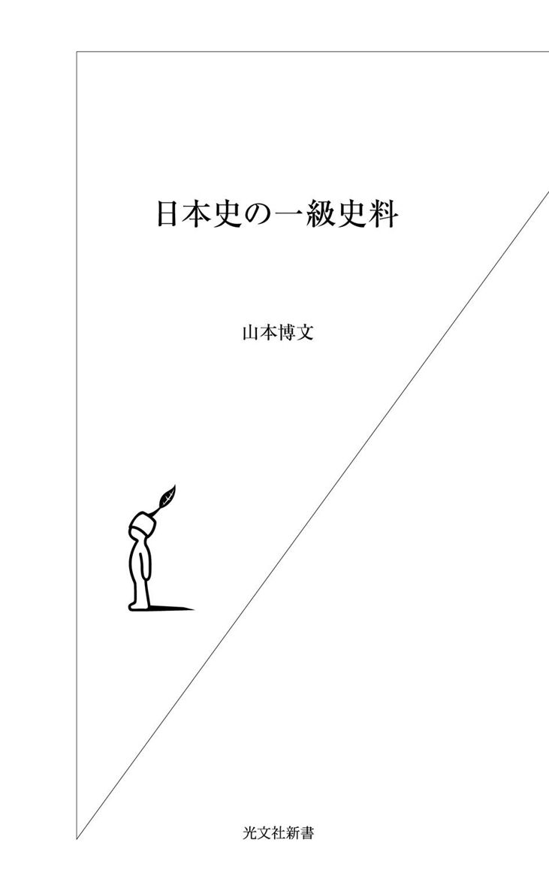
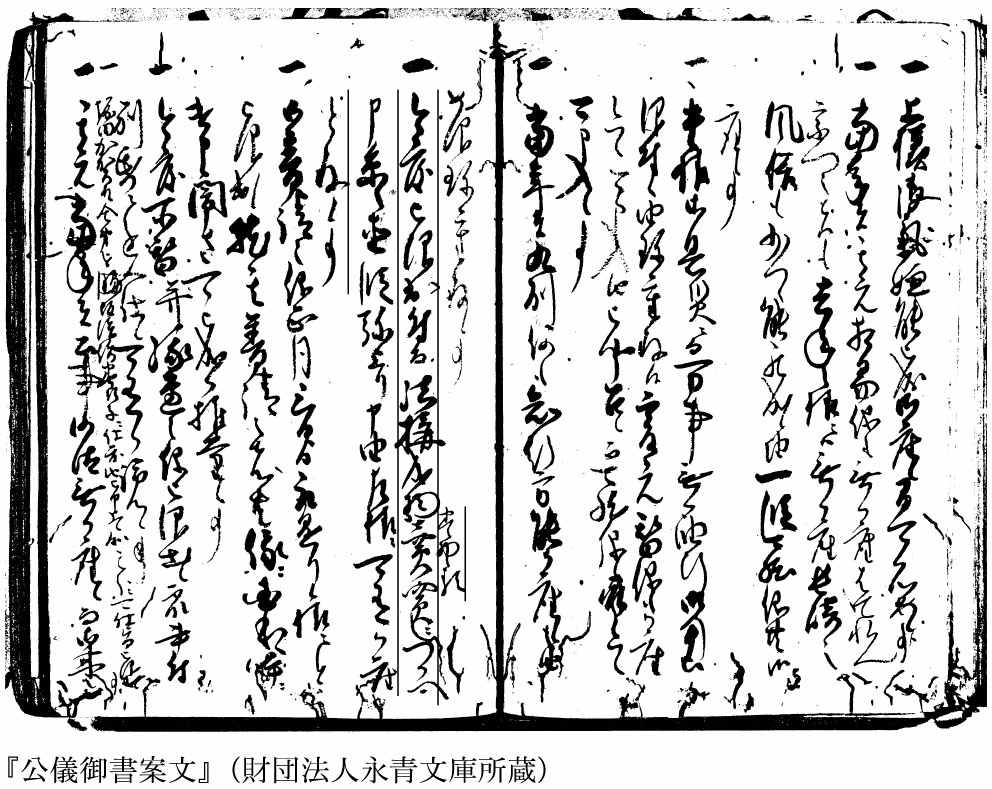

| 日本史の一級史料 | |
| 山本 博文 | |
| (2006) | |

歴史は、時々刻々と過ぎゆく時間の中で作られていき、多くの痕跡を残します。しかし、歴史家によって描かれないと、失われてしまいます。
通常、歴史家は、その描く歴史から遠く隔たった時間の中にいます。歴史的な事件を直接見ることはできません。
もちろん、織田信長の肉声を聞くことはできませんし、関ヶ原の戦いを間近で見ることもできません。
それでは、歴史は何によって描かれるのでしょうか？
その答えははっきりしています。歴史の痕跡である「史料」によって描かれるのです。
織田信長の最期の姿は、太田牛一の『信長公記』に書き留められています。
本能寺でときの声や鉄砲の音を聞いた信長は、周囲の者に聞きます。
「これは謀叛か、いかなる者の企てぞ」
「明智が者と見え申し候」
小姓の森蘭丸が答えると、信長は「是非におよばず」と言い、自ら弓をとって二、三本の矢を放ち、弓の弦が切れると鑓で戦い、肘に鑓傷を負うと、側にいた女たちに逃げるよう言い、奥へ入って自害します──。
このおなじみのシーンは、すべて『信長公記』の記述によっています。
関ヶ原の戦いは、天下分け目の戦いと言われるだけあって、数多くの史料が残されています。
合戦の模様を知らせる手紙、自分の軍功を示すために書かれた文書、回想録、さらにそれらをまとめて書物にした歴史書などです。ヴィジュアルなものとしては、『関ヶ原合戦図屏風』などもあります。これは、合戦の模様をのちに絵師に描かせたもので、津軽家旧蔵の屏風と井伊家の屏風が特に有名です。
歴史は、こうした史料によって描かれてきたのです。
本書で言いたいことは、二つあります。
一つは、歴史は過去に確かにあったことですが、現在、われわれが知りうる「歴史」というのは、史料から復元されたものであり、かつ史料からしか復元されえないものだということです。
なので、史料が残っていない歴史について、われわれは何も語ることができません。
もう一つは、歴史は「歴史家」というフィルターを通してしか描かれないということです。
史料が残っていたとしても、それを読む歴史家によって、そこから描き出される歴史の姿は変わります。
つまり、歴史を語るとき、史料とそれを読む歴史家の存在を無視することはできないのです。
教科書などに書かれている歴史は、けっして固定された正しい歴史ではありません。あくまでも、現在発見されている史料をもとに、現在の歴史家たちが紡ぎ出した「歴史」に過ぎないのです。だから、この一秒の間にも歴史家によって書き替えられ、更新されていくべきものなのです。
わたしは、東京大学史料編纂所で、史料の解読や出版を長年行ってきました。
そうした作業の多くは、史料集の出版や、それらの史料をもとにした歴史書に結実しています。
本書は、わたしがこれまで読んできた史料とその成果の数々を見ていくことで、歴史と史料の密接な関係を理解してもらい、ひいては、「歴史の感覚」を養ってもらうことを目的としています。
歴史はただの情報や知識ではありません。われわれと同じ、血の通った人間が、過去の時代を日々生きてきた一つの証拠でもあるのです。
歴史を生きた人間たちが、何を考え、どう行動したのか？
本書を読むことで、時代のリアルな息吹を感じていただきたいと思います。
なお、本書の書名は『日本史の一級史料』ですが、「一級史料」という言葉の厳密な定義はありません。
一級とか二級とかいうのは、それを判断する者の主観に過ぎないのです。
たとえば、歴史家の網野善彦氏は、偽文書の分析から優れた成果をあげています。
いわば、それまで「二級史料」ですらなかったものを、卓越した史眼で息を吹き込み「一級史料」として活用したわけです。
現在まで残された史料は、どれも貴重なものです。ある特定の史料を一級とし、それ以外を二級、三級とするのは傲慢な態度だとも言えます。
その意味では、「一級史料」という言い方は、新聞などのマスコミ用語にとどめるべきかもしれません。
しかし、歴史を現代に甦らせたり、これまでの歴史を書き替えたりする場合に有効な史料というものは確かに存在します。
本書は、わたしがこれまでの歴史研究の中で出会ったそうした「一級史料」を顕彰するために書かれています。
それは、あくまでわたしの主観による評価ですから、本書に出てくる史料以外にも多くの「一級史料」があります。
こうしたことを前提に、本書を読んでいただけたら幸いです。
「史料」と「資料」とはよく混同されます。
わたしの勤務する東京大学史料編纂所は、東京大学の附置研究所のひとつですが、よく間違って「資料編纂所」と書かれます。
小学館の『日本国語大辞典第二版』によれば、資料とは「それを使って何かをするための材料。特に、研究や調査などのもとになる材料」であるとされ、史料は、「歴史研究の素材となる文献、遺物、文書、日記、伝承、絵画、建築などの総称」とされています。
この定義で言えば、資料のうち歴史研究の素材となるものを史料と呼ぶことになりますが、ただし、歴史について書かれた研究書などの「文献」は資料に分類され、普通、史料とは呼びません。
「遺物」は確かに史料です。ただし、普通は考古学の分野とされ、歴史学者はあまり扱いません。
「文書」は、「もんじょ」と読みます。発信者と受信者があり、発信者の意思の伝達や用件などが書かれたものを言います。
「古文書（こもんじょ）」は文書のうち古いものを言います。古いという意味は、現在に関わりのない程度に古いもの、つまり歴史の領域にあるものという意味です。
ただし、こうした狭い定義の外に、古い書類一般をさす場合もあります。その場合は、くずし字で書かれた書物も含まれますし、一般の方には、印刷物である版本なども古文書に見えるかもしれません。しかし、これらは、厳密には「古文書」ではありません。
「日記」は、歴史学上の用語では「記録」と呼ばれます。現在、一般に記録と呼ばれるものには、「史書」「実録」「聞書」「覚書」なども含まれますが、厳密に言えば日記だけをさします。
「伝承」は、文字史料として定着していれば史料ですが、慎重な扱いが必要です。民俗学の先駆者柳田国男の著作のように近代になって伝承を定着させた書物は、史料というより文献となります。
「絵画」は、かつては史料として使われることは稀でしたが、最近では絵画の歴史学的な分析が進み、史料として活用されています。史料編纂所には、平成9年、画像史料解析センターが開設され、絵画史料や古写真の分析やデータベース化が進められています。
「建築」も、ある歴史的時点で作られたものですから、史料であることに間違いはありません。ただし、歴史家が建築物を積極的に史料として分析することは稀でしょう。
というのは、歴史家は、文字に残されたもの以外を史料として使うことを躊躇するからです。こうした姿勢、もしくは学問の立場は、「文献史学」と呼ばれます。
つまり、文字に残されたものだけを対象にする狭い「歴史学」ということです。これには自嘲的な響きもありますが、ひとつの学問分野と考えてもよいでしょう。
史料には、このほか、「系図」「古地図」「古典籍（古い書物）」などがあります。
史料のうち、文書と記録は、「一次史料」と呼ばれます。ある事件が起こった時、ないしある行為がなされた時点で書かれたものということで、のちに作成された「二次史料」とは区別します。これは、史料としての信頼度が格段に違うからです。
歴史家は、史料の中でも文書と記録に大きな価値を置きます。できればこの二種の史料だけで歴史を描きたいというのが歴史家の夢なのです。
目 次
歴史の専門家でない人にとって、時代小説やＮＨＫの大河ドラマは、どれもたくさんの史料をもとに書かれた、歴史そのものではないにしても、歴史とそれほど違いのないものに見えるに違いありません。
見てきたように書かれている時代小説や、実際に俳優が演じているドラマを見ると、それも当然だと思います。
しかし、素材によって、典拠とする史料には大きな違いがあります。ほとんど史料が残されていないものもあれば、膨大な史料が残っているものもあるのです。
たとえば、誰でも名前を知っている有名なヒーローでさえ、その実像を語る史料がほとんど残っていない場合があります。
逆に、あまりにドラマチックで、どこまで本当なのか疑問に思われるような事件でも、実はたくさんの史料が残っていて、演じられている細部にまで、何らかの史料が残っている場合があります。
本章では、日本史の一級史料を読んでいくウオーミングアップとして、宮本武蔵と赤穂事件の史料的背景について述べていきましょう。
国民的大作家吉川英治が書いた長編小説『宮本武蔵』は、現在講談社から刊行されている吉川英治時代小説文庫で全八冊、最後が巌流島の決闘です。たいした分量です。
ＮＨＫは、これを大河ドラマの原作に採用し、平成十五年の一年間をかけて放映しました。時間にして四十五分×四十八回の三十六時間もあります。
これほどの小説が作られるのだから、さぞ史料がたくさん残されているのだろうと思われる方が多いでしょうが、実は宮本武蔵関係の史料はごくわずかです。
ＮＨＫが、江戸東京博物館などで開催した展覧会に足を運んだ人はあるいは気がついたかもしれませんが、武蔵を直接に語る史料は少ないのです。
断片的な史料は除き、武蔵の事跡をまとめたものは、養子の宮本伊織が藩主から与えられた小倉郊外の手向山に建てた石碑と、武蔵の著書とされる『五輪書』の一部だけです。
手向山の石碑に刻まれた文章は、「小倉碑文」と呼ばれ、有名です。碑文には、巌流佐々木小次郎との決闘の場面が次のように記されています（原文は漢文、書き下し文にし、句読点を補った。──以下はわかりやすく意訳した）。
岩流曰く、真剣を以て勝負を決したしと。武蔵答えて曰く、汝 白刃を揮ってその妙を尽くせ、吾は木戟を掲げて此秘を顕さんと。（中略）両雄、同時に相会す。岩流、三尺余の白刃を手にして来り、命を顧みずして術を尽す。武蔵木刀の一撃を以てこれを殺す。
──小次郎は言う。「真剣で勝負を決したい」と。武蔵は答えて言う。「貴殿は真剣で立ち合え。拙者は木のほこでお相手しよう」と。（中略）二人は、決闘の場でまみえた。小次郎は、三尺余り（約一メートル）の真剣を手にしてあらわれ、命を顧みず技を尽くす。武蔵が、木刀の一撃で小次郎を仕留めた。
実在の人物である伊織が義父のことを書いている文章なので、実際に両者の戦いがあり、武蔵が木刀で小次郎を倒したことは史実でしょう。
しかし、武蔵死後に建てられた顕彰碑ですから、武蔵のことを美化していると考えた方がよいと思います。
ただ、生前の武蔵を知っている者の手になるものなので、二次史料の中では良質なものだと言えます。我々が武蔵の史実に迫ろうとすれば、この碑文を基礎とするほかはありません。
この碑文には、巌流島の決闘のとき、小次郎が鞘を捨てたというような記事はありません。ただし、それは近代以降の小説家の手になるものではなく、江戸時代に成立した「史料」によるものでした。
武蔵の伝記として有名な『二天記』は、武蔵が没してから一世紀以上も後の宝暦五年（一七五五）に、肥後八代城主松井家の家臣豊田景英がまとめたものです。松井家は、熊本藩細川家の家老の家柄で、先祖の康之は武蔵の庇護者でした。
この書物には、決闘のときの記述が次のように描かれています。現代語訳で引用しましょう。
小次郎は、刀を抜いて鞘を水中に投げ、波打ち際に立って武蔵が近づいて来るのを迎えた。そのとき武蔵は、水中に踏みとどまり、にっこと笑って言った。「小次郎、敗れたり。勝者がどうして鞘を捨てようか」。小次郎は、ますます怒り、武蔵が近づくやいなや刀を上段に振りたて、まさに武蔵の眉間を打とうとした。その瞬間、武蔵が同時に打った木刀が、小次郎の頭に当たり、その場に倒れた。はじめ小次郎が打った太刀の切先が武蔵の鉢巻きの結い目にあたったか、武蔵の額から二つに分かれて落ちた。武蔵は、木刀を振り上げてしばし立ち、また打ち下ろした。小次郎は、伏せながら刀を横に払った。その切先は武蔵の袷の膝の上に垂れた部分を三寸ばかり（十センチ前後）切り裂いた。武蔵の木刀は、小次郎のあばらを打ち折り、気絶した。
まるで小説のような文章です。百年以上も後の人間が、その決闘をまるで見てきたかのように書いています。近代以降の芝居や小説、映画、テレビ時代劇に至るまで、巌流島の決闘は、この『二天記』によっています。
この『二天記』は、史料として採用してよいものなのでしょうか。
一次史料に限りなく近い小倉碑文にないものが、のちに発掘され、『二天記』の記述のもとになったとは思えません。むしろ、『二天記』の作者が創作したものの可能性が高い。
その意味では、これは史料というより、いわゆる実録もの、すなわち小説のようなものだと考えるべきでしょう。
一世紀以上も経たなくても、江戸時代の「史料」の中にはこうした小説のようなものがあります。
森鷗外が小説『阿部一族』の種本にした『阿部茶事談』という史料も、一部に文書などの一次史料を引用しながら、阿部弥一右衛門の殉死の解釈などはすべて創作です（拙著『殉死の構造』弘文堂）。
この史料は、熊本藩の史料を保存している熊本大学附属図書館「永青文庫」に所蔵されていますが、そうした筋のよい史料でさえ、小説に分類した方がよいものがあるのです。
また、同じ「永青文庫」にある『秘書』という史料は、藩主細川家の代替わりの混乱を描いたものですが、これも記述の中心部分はまったくの創作です（拙稿「武士文学としての『秘書』」〈『江戸文学 31』ぺりかん社〉）。
どうして、そんな創作がなされたのでしょうか。
それは、武蔵の教えを汲む二天一流が発展し、大勢の弟子がいたからです。流派を拡大するためには、その始祖の事跡をできるだけ過大に描く方が効果的です。そのため、武蔵の伝記を作り、その中に小説的要素を入れていったのでしょう。
熊本藩の記録で武蔵が出てくるのはこれくらいですが、一点だけ注目すべき史料があります。『沼田家記』というものです。
沼田家は、細川家の家老を務めた家柄で、巌流島の決闘のときは門司を預かっていました。この史料によると、武蔵と小次郎はともに兵法（剣術）の師範をしていました。
双方の弟子が、どちらの兵法が優れているかと争い、ついに武蔵と小次郎が仕合（試合）をすることになりました。『沼田家記』は、次のように記しています。
双方共に弟子一人も参らざる筈に相定め、仕合を仕り候処、小次郎打ち殺され候。小次郎は兼ねてのごとく弟子一人も参らず候。武蔵弟子共参り隠れ居り申し候。其後に小次郎蘇生致し候得共、彼弟子参り合い、後にて打ち殺し申し候。
──双方ともに弟子を一人も連れないように決め、試合をしたところ、小次郎が打ち殺されました。小次郎側は約束通り弟子が一人も来ていません。武蔵の弟子たちは来て、隠れていました。しばらくして小次郎が蘇生致しましたが、武蔵の弟子が出てきて、打ち殺しました。
『沼田家記』は、その時点で書かれたものではありません。しかし、当時、門司を預かっていた者の家に残ったものだけに、無視することはできません。
わたしは、実際にこの史料を手にとって読んでみましたが、料紙（使用する紙）や文字など、特に疑うべき点はありませんでした。
内容が衝撃的なだけに確信を持って言うことはできませんが、巌流島の決闘は、双方の弟子の諍いから起こったもので、その結末も、このようにどろどろとした陰謀が行われていたのかもしれません。
武蔵の足跡がその後わからなくなるのも、無理のないことです。
武蔵は、晩年、『五輪書』と題した兵法書を著したと言われています。
この書物は、果たして本当に武蔵の著作でしょうか。
『五輪書』は、寛永二十年（一六四三）十月上旬、武蔵が熊本の細川家に仕えていたとき、岩戸山に登って著述したものだとされています。
書名の由来は、『五輪書』が、地之巻、水之巻、火之巻、風之巻、空之巻の全五章からなるからです。
地之巻によれば、武蔵は幼い頃から兵法の道に心懸け、十三歳のときに初めて勝負してから、二十八、九歳まで、諸国で諸流の兵法者と六十余度にわたって勝負を行い、一度も負けたことがなかったとされています。
三十歳以降の武蔵は、兵法のより深い境地を開くために朝夕に鍛錬を重ね、五十歳頃にようやく兵法の道を極めたといいます。
武蔵は、「今の世の中に、兵法の道を確かに究めたという武士はいない」と断言します。それは、「大形武士の思ふ心をはかるに、武士は只死ぬると云う道を嗜む事と覚ゆるほどの儀也（おおかたの武士の考えを推測すると、せいぜい武士はただ死ぬ覚悟をするものだと考えているぐらいだ）」だからです。
しかし、「只死ぬると云う道を嗜む事と覚ゆるほどの儀也」というのは、佐賀藩士山本常朝の言葉である『葉隠』（一七一六）を下敷きにしたような言い方です。武蔵の時代には、まだ武士らしい武士が大勢存在した時代であり、武士道の本質が死ぬことだというような言説が成立していたとは思えません。
つまり、『五輪書』の言い方は、十七世紀末ならばわかるけれども、十七世紀中頃のものとは思えないのです。
現在に残る『五輪書』は写本で、武蔵の自筆本は残っていません。有名な写本は、熊本藩主だった細川家に残されています。
奥書（書物の末尾に付した記述）によれば、この写本は、正保二年（一六四五）五月十二日、武蔵が高弟の寺尾孫之丞（勝延。勝信とも書く）に与えたもので、寛文七年（一六六七）二月五日に、孫之丞が山本源介という者に与えたことになっています。武蔵の死から二十余年後のことです。
しかし、この奥書を素直に受け取ることはできません。奥書には、おうおうにして作為があるからです。
わたしは、『五輪書』とは、武蔵の残した覚書や小倉碑文などをもとに、弟子の一人が武蔵の直系の弟子であることを示すために作ったものだと考えています。
江戸時代の芸道の権威である西山松之助氏も、「おそらく武蔵没後に、その高弟寺尾孫之丞が武蔵の剣法を整理したものと考えられる」（「近世の遊芸論」）と指摘しています。
茶道のバイブルともいうべき『南方録』が、伝えられているように千利休に近侍した南坊宗啓が筆記したものではなく、後世の茶人が宗啓に仮託した書物であるのと同じだというのです。
十七世紀後半は、兵法を含めた芸道が伝統化する時代です。
武蔵の死後、弟子らによって武蔵の偶像化が進められます。流派はおおきく三つに分かれますが、その一流の代表者だった寺尾は、自らの正統性を示すためにも、武蔵から秘伝書を受け取ったという事実が必要でした。
そのため、武蔵の覚書や言葉から武蔵の書物を創作（「捏造」）し、それを弟子に与えたのではないでしょうか。
ただし、一応は武蔵に接したことのある弟子の手になるものということですから、『五輪書』の評価を不当に下げることもないでしょう。こうしたことを前提とした上でなら、弟子が武蔵に仮託して書いた書物であっても「史料」として使えます。
わたしは、武蔵の死後に、『五輪書』や『二天記』などが書かれたこと自体が、それが書かれた時代を考察する「史料」となりうると考えています。
そのことから、二天一流の流派の広まりや、それぞれの流派の創始者の精神を類推することによって芸道に高めていこうとする社会の様子がわかるからです。
さて、『二天記』は駄目で、『五輪書』にも疑問があるとすれば、われわれはどのような史料から武蔵を考えていけばよいのでしょうか。
わたしは、一次史料に確かな事跡があるとすれば、そうした二次史料も活用する道があると考えています。
一次史料で武蔵を語るものは、熊本藩の史料である『奉書』です。これは、熊本藩家老が、藩主の指示を受けて発給した文書を書き留めたものです。
この中に、武蔵は、七人扶持・合力米十八石が給されたことが見えます。
実は、熊本藩では、藩主の細川忠利とその父で八代城主の忠興が、頻繁に書状を取り交わしていました。
一万点を超えるその書状のすべてを読んでも、武蔵のことはぜんぜん出てきません。これは非常に不思議なことです。
忠利が武蔵をたいへん評価していたとしたら、少なくとも召し抱えたとき、忠興に何らかのことを告げたに違いありません。事実、忠利の書状には、熊本で武蔵が立ち合ったとされる柳生宗矩の弟子氏井弥四郎が、雲林院弥四郎という名前で出てきます（小島英煕『宮本武蔵の真実』）。
七人扶持・合力米十八石というわずかな手当も、忠利が武蔵にそれほどの思い入れがないことを示しています。
このように、忠利・忠興の往復書状という一次史料に武蔵が出てこないことが、わたしが『五輪書』などを信じ切れない理由なのです。
それでは、どうして武蔵の足跡を示す場所や製作した木刀や書画がたくさん残っているのでしょうか。
これも答えははっきりしています。のちに武蔵が神格化されたため、それらのものが「捏造」されたと考えられます。
歴史学の世界では、「伝宮本武蔵」とされるものは、宮本武蔵が作ったものと伝えられるという本来の意味のほかに、言外に実はそうではないかもしれない、という解釈が込められています。しかし、そうではないという証拠もないため、とりあえずそう言っておきましょう、ということなのです。
武蔵の実像は、歴史学的に見ると、「よくわからない」というのが現時点での正しい解釈です。
もちろん、熊本藩の史料から武蔵に関する新史料が発掘されたとしたら、『五輪書』や『二天記』の新たな解釈もできるかもしれません。
しかし、それがない以上、わたしは、武蔵について確かなことは言えません。
こういう事情から、大河ドラマの前に武蔵についての本を書くよういくつかの出版社から依頼されましたが、お断りしました。
毎年のように、年末になると「忠臣蔵」がテレビで放映されます。
このもとになった史実が、取り潰しになった赤穂藩の旧臣が主君の敵と目した吉良上野介邸に討ち入った「赤穂事件」であることは誰でも知っていることでしょう。
なぜ赤穂事件が忠臣蔵と呼ばれるかと言えば、この事件をもとに人形浄瑠璃や歌舞伎の脚本が数多く書かれ、それがのちに『仮名手本忠臣蔵』という脚本に集大成されたからです。
「仮名手本」とは、寺子屋などで使われる教科書で、つまり忠臣の教科書、蔵は忠臣が収められている蔵と本来の主人公大石内蔵助良雄（脚本では大星由良之助）の蔵をかけたものでしょう。
この演目はいつも庶民の人気を呼び、「芝居の独参湯」と称されたと言います。独参湯は、当時気付け薬として用いられた評判の薬です。
なぜ忠臣蔵が日本人好みなのかと言えば、いくつかの理由が考えられますが、最大の理由は、大きな目的のために四十七人の者が一致団結して努力し、ついに成功を収めるという筋立てが大きいと思います。
しかも、その目的は主君への「忠義」であるとされているので、江戸時代でも受け入れられやすかったのです。
事件のもとになった赤穂藩主浅野内匠頭長矩の刃傷事件が元禄十四年（一七〇一）三月十四日、旧赤穂藩士の吉良邸討ち入りが翌年十二月十四日です。
現在から数えれば三百年以上前の出来事ですが、赤穂事件関係の史料は膨大に残っています。
活字になっている史料だけ挙げても、『赤穂義人纂書』と『赤穂義人録』に関係史料が集められています。
これらは、幕府および幕府関係者の記録、内匠頭や旧赤穂藩士たちを預かった藩の記録、旧赤穂藩士たちが家族たちに出した手紙など、一次史料が中心です。
有名な事件の中でも、これほど一次史料が伝わっているものは少ないのではないでしょうか。
それは、討ち入り直後から四十六人（討ち入り後、寺坂吉右衛門は姿を消した）の旧赤穂藩士は多くの武士や庶民のヒーローになり、関係者がその遺品を大切に伝えたからだと考えられます。
一方で、あまりに有名なだけに、中には偽文書なども含まれているかもしれませんし、自分の働きを誇大に書き立てたものも存在します。
江戸城中で吉良に斬りかかった内匠頭は、田村右京大夫に預けられ、即日切腹が命じられました。そのときの内匠頭の辞世は有名です。
風さそふ 花よりもなお われはまた 春の名残を いかにとかせん
風のため散っていく桜の花よりも、わたしは未練を持って散っていく。この名残の思いをどのようにしたらよいのだろう──というような意味でしょう。
なんともよくできた辞世ですが、これも内匠頭本人によるものではないという説があります（野口武彦『忠臣蔵』ちくま新書）。
この辞世は、検使（切腹を見届ける役）として内匠頭切腹の場に立ち合った幕府目付多門伝八郎という人が残した記録『多門伝八郎覚書』に載せられているものです。
その意味では一次史料ですが、書かれたのが当日ではなく、四十七人が吉良邸に討ち入ってヒーローになった後、往時を回想して書いたものだというところに問題があります。
回想録の類は、自分の立場を正当化し、過去を美化して書くのが一般的です。中には記憶違いもあり、創作も混じっているかもしれません。
この辞世もその可能性があります。というのは、内匠頭を預かった田村家で作成した日記に、この辞世がまったく書き留められていないからです。もし内匠頭が紙と筆を所望し、辞世を書いたとしたら、少なくともそうした記事がありそうなものです。
しかも、多門は、自分が許可して、内匠頭の側近片岡源五右衛門を邸内に入れ、庭の陰から主君への別れをさせたとまで書いています。当時、こうしたことが許されたとは思えませんし、片岡も江戸の赤穂藩邸にあって対応に忙殺されていたはずです。
このような自己英雄化とでも言うべき回想録を全面的に信じることができないのは当然です。
ただ、わたしとしては、多門が真実を書いていると信じたい気持ちもあります。後世の記録ならともかく、当事者の記録だけにそれなりの価値を置きたいと思うからです。
しかし、歴史家としては、『多門伝八郎覚書』の信憑性に疑問が提出され、反証できない以上、史実と認めるわけにはいきません。
赤穂藩が取り潰しになった後の旧赤穂藩士の動静は、『江赤見聞記』という史料に詳しく書かれています。
題名は、「江戸と赤穂で見聞きした記録」という意味で、文中には赤穂城受け取りを命ずる幕府の文書など確かな史料が引用されています。
内匠頭の夫人であった瑶泉院に仕えた落合与左衛門によるものとされています。この点の確証はありませんが、少なくとも赤穂藩に渡された公文書を見る立場にあった者が書き留めた記録であることは確かでしょう。
史料中には、討ち入りに参加する旧赤穂藩士の所在や大石内蔵助の動静などが書かれています。赤穂事件に関して書かれた歴史書で、これに依拠しないで書かれたものはありません。
全面的に依拠するのは危険ですが、一次史料と目立って齟齬するところもないので、史料的価値は高いと言えます。
『江赤見聞記』には、大石内蔵助が祇園で遊興にふけったということも書かれています。しかし、その姿は、一般におなじみのものとは少し違います。
その部分を引用してみましょう。
内蔵助事、全く活気なる生まれ付き故、京都において遊山見物等の事に付き、宜しからざる行跡もこれ有り。金銀等もおしまず遣い捨て申し候。此事を、古風なる源四郎・源五右衛門など、つよくきのどくがり、異見等も切々申し候。
──内蔵助は、まったく活発な性格だったので、京都において遊山見物などのことで、あまりよくない行跡もあった。金銀なども惜しまずに浪費していた。この事を、古風な性格の進藤源四郎や小山源五右衛門などは、たいへん残念に思い、いつも意見をしていた。
こうした内蔵助の行動が、当初は盟約に加わっていた進藤源四郎や小山源五右衛門の脱盟を招いたのかもしれません。
ただ、この記述に着目して、「散財や不行跡につながるような派手な物見遊山が遊里での遊蕩に誇張されたのかもしれない」（宮沢誠一『赤穂事件──紡ぎ出される「忠臣蔵」』）という評価があります。
遊廓で太夫らと戯れる姿は、演出効果をねらったものと考えられるので、歌舞伎脚本の創作だと思われます。
しかし、遊山見物そのものが悪いと言っているわけではなく、「宜しからざる行跡」があったと書いてあるので、多額の金銀が必要な遊廓に行ったと解釈しても無理ではありません。
このあたりは、内蔵助をどういう人物だったと思うかという問題になります。わたしとしては、映画やテレビほどのことはなかったにせよ、そうした遊興もあったのだと思います。
むしろ、ここで指摘しておきたいのは、『江赤見聞記』の記述が非常に慎重であることです。どちらにでも解釈できる文章ですが、ことさらにおもしろさをねらっていないということに、逆にこの史料の信憑性を感じるのです。
こうした史料の中でも一級史料と呼べるのは、討ち入りを指導した大石内蔵助の手紙です。
内蔵助は、長男主税とともに討ち入り、ともに切腹します。残された二人の男子のうち、次男は夭逝しますが、三男は成長し、のちに赤穂藩の本家、安芸国広島藩浅野家に内蔵助と同じ千五百石で召し抱えられます。
こうして、内蔵助の書状は、散逸することなく、現在に残されたのです。
その中から、七月二十五日付けのものの一部を引用しておきましょう。内蔵助が離縁した妻りくに送った手紙です。
いつぞやも申しまいらせ候通り、いまほどやさかぎおん（八坂祇園）おどりゆへ、われら、ちから（主税）もまいりみ申し候。なかなかなぐさみ事にて候。ふしみ（伏見）のかのおどりも見申し、さてもさてもおどろき入りたる事ども、そもじどのへみせ申し度事と、しんとしんとぞんじ出す事どもにて候。
──いつぞやも話した通り、今は八坂神社の祇園踊りの時期なので、わたしも主税を連れて見に行ってきた。なかなかおもしろいものだった。伏見の有名な踊りも見て、たいへん驚くほどのものだった。あなたへ、ぜひ見せたいものだと、心の底から思ったことだ。
歴史上の人物の心情がわかる史料というのは、とりわけ貴重なものです。わたしは、人物研究は、この人物ならこういう場面でこう行動するだろうということがわかるようになるほど、こうした史料を読み込む必要があると思っています。
生半可なことでは思い込みになってしまいますが、多くの史料を読めば、その人物の感覚が次第にわかってきます。そうした上であれば、自分なりに納得して評価を下すことができます。
この手紙から見ると、内蔵助は家族として妻を愛しており、ここでは引用していませんが、残した子供に自分の死後、大石家を再興してほしいと考えていたことがわかります。
討ち入りは、自分が死ぬことが前提でした。しかし、離縁した妻子にまで累は及ばないだろう、あるいは及ばないでほしいと思っていたことがわかります。
歴史上の人物が為したこうした判断は、当時の社会の雰囲気を雄弁に物語ってくれます。内蔵助だけではなく、多くの討ち入り参加者が、残した子供たちのため、自分が武士の道を踏み外すべきではないと考えていたことがわかります。
当時の武士にとって、討ち入りは人間としての務めだったのです。
この場合の「人間」とは武士を指します。武士の子は元服することを「人となる」と表現しました。武士にとっては、それ以外の身分は人ですらなかったのです。
これは、別に百姓身分や町人身分の者を蔑視していたというのとは少し違います。武士身分の者には特別な規範があり、武士である以上、そうした規範を守るのが当然だと思っていたのです。
こうしたことは、百姓身分や町人身分の者も十分に認めており、だからこそ武士を尊重したわけです。
当然、そうした規範を守れない武士は、人ではない者として軽蔑されることになります。「武士を立てる」、すなわち武士として生きていくのがたいへんなことであったことが、討ち入り参加者の遺書からも浮かび上がってくるのです。
これまで見てきたように、赤穂事件には多くの一次史料が残っています。それでも、潜伏していた旧赤穂藩士たちがどのような行動をとっていたのかなどという点は、『江赤見聞記』なしにはわかりません。
このように、二次史料に依拠せざるをえない場合、それが「史実」だということを保証することができるでしょうか。すでに述べたように、誇張や記憶違いの可能性もあるのです。
「できない」というのであれば、明らかになる歴史はたいへん貧弱なものになってしまいます。
そのため歴史家は、二次史料であっても、一次史料と突き合わせ、その史料の典拠となったものは何か、またどのような姿勢で書かれているかを考え、ある程度信頼していいものとあまり信頼できないものを峻別していくことになります。
これは、ある意味で信念の問題になりますから、個別の史料については歴史家によって見解がわかれることになります。これはやむをえないことです。
しかし、どのような史料を使うにせよ、その歴史家がどれだけ確かな史料で史眼を養ってきたか、ということが大きなポイントになります。
最後のぎりぎりのところでは、自分はこの史料のここまでは信頼できる、あるいは、この史料は根拠は明示できないが信頼できそうだ、という勘のようなものに頼らざるをえないのです。
歴史家は、実在する史料から、どのような「歴史」を現代に蘇らせるのでしょうか。
この章では、歴史家の史料の読み方を解説していきます。
わたしが勤める東京大学史料編纂所では、これまで一千冊以上の史料集を編纂・出版してきました。近代歴史学の一翼を担った機関であることは衆目の一致するところです。
本章では、１でまず史料編纂所の沿革と出版した書目の解説を行い、２で史料の編纂とはどのような作業なのかを示し、３でわたし自身の経験から、史料の読み方の実例を紹介したいと思います。
保己一は、当初の目的に、日本の歴史や律令の研究を挙げています。そして、自分の事業であった『群書類従』（日本の史料を集成した叢書）の編纂も和学講談所の事業に吸収していきました。
和学講談所は、寛政七年に寺社奉行支配から林家支配へと管轄替えとなります。
昌平坂学問所が開成学校を経て帝国大学となり、今の東京大学になることを思えば、史料編纂所は東京大学の中でも最も古い歴史を持つことになります。
明治政府は、明治二年（一八六九）三月、和学講談所跡に史料編輯国史校正局を開設しました。明治政府の修史事業は、保己一の事業を引き継いで開始されたのです。
翌四月、明治天皇が三条実美に、史局を開設し、その総裁を命じた宸翰（天皇の手紙）は、現在でも史料編纂所に保管されています。
この組織は、何回かの変遷を経て、明治二十一年十月、帝国大学に国史科が創設された際に、帝国大学に移管されました。その頃は、臨時編年史編纂掛と呼ばれています。
当初、めざしたのは、編年体の歴史書を編纂することでした。しかし、外国人教師ルードウィヒ・リースの意見を容れ、歴史を書くのではなく、蒐集した史料を編纂刊行することにしました。
こうして明治二十八年四月、帝国大学文科大学に史料編纂掛が設置されました。明治三十四年には、最初の成果として、『大日本史料』二冊（第六編之一・第十二編之一）と『大日本古文書』（編年文書）が発刊されました。
第十二編之一の最初の綱文は、
「慶長八年（一六〇三）二月十二日、内大臣徳川家康ヲ右大臣ニ任ジ、征夷大将軍ニ拝シ、源氏長者、淳和奨学両院別当ト為シ、牛車兵仗ヲ聴ス」
というものです。
綱文に続いて、「公卿補任」「御湯殿上日記」「実條公記」「義演准后日記」「萩藩閥閲録」「吉川家譜」「光豊公記」「慶長日件録」「言経卿記」「時慶卿記」「壬生家四巻之日記」「鹿苑日録」「東照宮将軍宣下之記」「創業記考異」以下、さまざまな関係史料が収録されています。
史料は、関係部分の抜粋で、中心となる一次史料から配列し、比較的信頼のおける二次史料まででとどめ、それ以外のものは〔参考〕として収録します。
この条は、朝廷における官職の任命記録である「公卿補任」、天皇の側に仕える女官の日記である「御湯殿上日記」を先頭に置き、公家の日記や諸大名家の書状や記録を配列しています。
本来ならば、家康を将軍に任命した辞令である口宣、宣旨、位記といった基本文書をまず掲げるべきですが、原本が伝存していないとこうなります。
ただし、口宣などは、「言経卿記」に写されており、文書の起草にあたった大外記壬生家の記録（「壬生家四巻之日記」）も収録されていますので、内容はほぼ原本通りに復元できます。
一方の『大日本古文書』は、日本の代表的な古文書を活字にして刊行するものです。
「編年文書」は奈良時代の文書を編年にならべたもの、ほかに「家わけ」として武家や寺社の史料を刊行しています（表２）。
公家だけではなく、戦国時代の薩摩島津家に仕える武将上井覚兼の日記や、秋田藩の奉行を務めた梅津政景の日記、正徳の治を指導した新井白石の日記、江戸の町名主斎藤月岑の日記なども刊行されています。
『大日本近世史料』は、近世すなわち江戸時代の主要な史料を刊行するものです（表４）。

現在では、幕府の役職に就いた者を記録した「柳営補任」、長崎の唐通事の会所の日誌である「唐通事会所日録」、仏教諸宗派の末寺を書き上げた「諸宗末寺帳」、武家伝奏広橋兼胤の公務日誌である「広橋兼胤公武御用日記」、嘉永四年（一八五一）に達された株仲間再興の関係史料の集成である「諸問屋再興調」など多くの書目が刊行されています。
わたしは、史料編纂所に入ると、山本武夫教授のもとで『大日本近世史料』の中の「幕府書物方日記」の編纂にあたりました。
この史料は、幕府の図書館である紅葉山文庫の文庫長である書物奉行の役務日誌です。
紅葉山文庫の発祥は、徳川家康が駿府在城のときです。家康は、書籍を蒐集し、その管理は儒者の林羅山が行っていました。
家康は、遺言で、駿府の書籍を御三家に配分しましたが、「日本ノ旧記、及希世ノ書冊」は江戸に献ずるよう命じました。
こうして江戸城の文庫が充実したのです。
宝永七年（一七一〇）六月、紅葉山にあった東照宮を修繕したとき、書物蔵を改築しました。正徳元年（一七一一）には新たに一棟の蔵（西文庫）を造り、ここに東西の書物蔵が成立しました。正徳三年には、書物蔵が狭隘になったので、さらに一棟の蔵を建てました。これを新御蔵といいます。
享保元年（一七一六）六月、新将軍吉宗は、『御文庫書籍目録』を提出させ、座右に置きました。この目録は、幕府大学頭の林家が作成した八冊本です。紅葉山文庫には、その副本を作って備えておきました。
以後、吉宗は、この目録を見て、紅葉山文庫の書物を借り出しています。
もっとも紅葉山文庫は将軍のものですから、借り出すとは言わず、将軍の「御用」があるので「上げる」という言い方をします。返却の場合は、「下される」と言います。
書物奉行の方から返却してくれとは言えず、吉宗も下すのを忘れることが多かったのか、上げてから三十日経っても下されなかったときは、その旨を書いて側衆に達するよう命じました。
毎日、図書の維持・管理と出納を行った記録ですから、これを読めば、幕府にどのような書物が蓄積されており、またときどきの将軍がどのような書物を読んだかがわかります。
その意味では、江戸時代の稀有な学芸史料と言えるでしょう。
編纂されているのは八代将軍徳川吉宗の時代がほとんどですから、好学な将軍吉宗が何を読んだかがほぼ明らかになります。
享保八年の日記を見てみましょう。
まず、正月元旦には、「『弓法書』が、前年下された書物の中に紛れて下してしまったので、探して差し上げるように」と、御側御用取次の有馬氏倫から仰せ下されています。
吉宗が、弓の書物を座右に置いていたこと、こうした書物の注文は御側御用取次から来ることがわかります。
書物奉行は、有馬へ、奥坊主の清知をもって差し上げています。実際に書物を運ぶのは、奥坊主でした。
歴史書である『三代実録』も上げさせていました。
また、藤原定家の『明月記』は下げられていましたが、入っていた箱が下っていないので、ついでのときに下されるよう、書付を有馬に上げています。今では日本史の専門家しか読まない『明月記』も読んでいたのです。
さらに、『唐詩画譜』という書物は、「上がり切りにする」と有馬から仰せられています。おそらくこの書物は、唐詩に詠まれた風景を描いたもので、吉宗が気に入り、座右に置いて眺めたいと思ったのでしょう。
享保八年二月までを見ると、次のような書物が上げられています。
正月二十四日には、『六経図』ほか三部十冊。
同二十八日には、『扶桑略記』三種十九冊。
二月八日には、『神社考』。
同十八日には、『礼儀類典』五百十五冊。
同二十五日には、『令集解』十巻、『律』二巻、『令義解』七巻。
逆に、二月十八日には、『駿河国風土記』など風土記八冊が下げられています。
三月は省略して、四月三日には、『将軍宣下記』『諸礼法儀之書』『和漢三才図会』『弓箭射法之書』『乗馬手綱之書』『御系図』が上げられています。
また、『山形城図』をはじめとする各地の城絵図、あるいは全国の国絵図もよく閲覧しています。
吉宗は、自分の治世下にある日本の国土に関心が深く、国ごとに描かれている国絵図を総合して日本図を作らせました。国絵図を必要としたのはそのためでしょう。
国絵図は、六メートル×八メートルほどもある大きなものです。
吉宗が、これをふだん生活している御座の間で見たのか、あるいは黒書院など比較的大きな部屋で見たのかよくわかりませんが、座敷に広げ、その上を歩いたりしたと思われます。
吉宗は、特に国史、地理、法令、儀式、軍学に興味を持っていました。
また、『帝範』『臣軌』などの中国の為政者としての教訓書、軍学書として有名な『甲陽軍鑑』『平家物語』などの軍記も読んでいます。
吉宗は、書物にあふれた現代と違い、古典的な書物をよく上げさせているのです。
ただし、どれだけきちんと読んだかはわかりません。中国の古典などは、おそらく林家などの儒者に解説させたのだと思われます。
しかし、そうして身につけた教養が、吉宗の進めた享保の改革のバックボーンになっていたということは言えるでしょう。
吉宗は、歴代将軍の中では一、二を争う教養人でした。
紅葉山文庫の書籍は、将軍だけが閲覧したわけではありません。必要に応じて、老中らも借り出していました。
この年正月十七日には、目付から廻状があり、老中安藤対馬守（信友）が『蒔田系譜』御用を伝えたという記事があります。老中は、目付に命じて、書物を借り出したのです。
あいにくこのとき、『蒔田系譜』は、前年冬、奥（江戸城「中奥」のことで、吉宗の居住空間）へ差し上げ置いており、未だ下されてないと返答されています。
当然のことながら、将軍が閲覧しているときは借りられなかったのです。
また、四月四日には、下げた書物のうち、『伊勢風土記』六冊を、大学頭林七三郎（信充）が参照のため拝借したいと申し出たので明日差し上げるように、と命じられています。
まさに、紅葉山文庫は幕府の図書館だったのです。
吉宗の時代の「幕府書物方日記」には、書物の考証についての記事はあまり多くありません。残念なことです。
当時の書物奉行の中には深見有隣のような学者もいたのですが、通常の業務に関わらないため、日記には記さなかったのかもしれません。
深見は、元文四年（一七三九）十二月、書籍校合の功により黄金三枚を下賜され、明和二年（一七六五）には西の丸裏門番の頭に栄転しています。書物奉行はあまり格の高い役職ではなかったのです。
のちに、蝦夷地探検で有名な近藤重蔵が書物奉行になったときは、書物の考証を行った記事があります。
「幕府書物方日記」は、第十八冊の刊行後中断していますが、必要があれば、独立行政法人国立公文書館内の「内閣文庫」に行けば閲覧することができます。
内閣文庫は、紅葉山文庫を引き継いだ組織で、「幕府書物方日記」（原題は『日記』）もその蔵書の一つです。
わたしは、四年間、「幕府書物方日記」の編纂を行った後、加藤秀幸助教授（のち教授）のもとで、『大日本近世史料 細川家史料』（以後、「細川家史料」と略す）の編纂を担当することになりました。昭和六十一年のことです。
加藤氏の定年退官後は助教授となり、平成十五年まで、助手時代も含め十八年間にわたって「細川家史料」の編纂を担当し、九冊の史料集を出版しました。
熊本藩の藩政史料と細川家文書は、ともに東京都文京区目白にある永青文庫の所蔵です。その大部分は、熊本大学附属図書館に「永青文庫」として寄託されています。
「細川家史料」には、豊前小倉藩主ついで肥後熊本藩主となる細川家に残る細川忠興と同忠利が取り交わした往復書簡が収録されています（書簡は、歴史家の間では「書状」と呼びますから、以下は書状と言います）。
細川家は特に情報収集に長けた大名で、忠興と忠利は交互に江戸と国元を往復していましたから、江戸の政治情勢や国元の政治について、月に数度の割合で書状を取り交わしていました。
そのため、「細川家史料」を読むと、当時の政治の裏側が手にとるようにわかります。
電話がない時代なので、音声で知らせるだけで後に残らない極秘情報が、すべて文字の形で残っているのです。
しかも、時代は慶長（一五九六～一六一五）から寛永（一六二四～四四）という幕府成立期の激動の時代です。大名たちは、生き残りをかけ、必死に情報収集し、自らの行動の指針としていました。
そうして収集した情報が書き込まれた忠興・忠利の往復書状は、間違いなく第一級の政治史史料です。
わたしは、この往復書状を主な素材に、細川家の生き残り戦略を考察した『江戸城の宮廷政治』（読売新聞社。文庫判は講談社学術文庫など）を書きました。興味のある方は、一読してみてください。
史料集の編纂は、『大日本近世史料』の場合、本文を正確に校訂し、登場人物に傍注をつけ、内容を要約した「標出（頭注）」をつけることです。
まず、くずし字を正確に読みこなす必要があります。くずし字は、似たようなくずしがいくつかあるので、意味を勘案しながら読んでいきます。
「罷」と「被」、「之」と「候」などは、ほとんど区別がつかない場合があります。一字間違って読むと、何字も続けて間違うことになったりします。こうなると、ぜんぜん意味が違ってきます。
たとえば、以下は「細川家史料」十八巻で出てきた文章です（二九八九号文書、〔寛永十二年〕八月七日榊原職直宛忠利書状『公儀御書案文』所収）。

最初は、次のように読んでいました。
一、今度被仰出付而、結構成物売買つかへ申参候、直段弥上り申由、左様ニ可有御座と存候事、
文意は、とりあえず「今度の将軍様（家光）の仰せ出されによって、立派な物、巻物（絹の反物のこと）類の売買が滞っていると申して来ました。（そのため）値段が上がっているということ、そういうこともあろうかと存じます」と解釈できます。
しかし、太字にした「参候」と「直段」がうまく繋がっていません。
どうもおかしいと思って原本をよく見ると、「参」のように見えた字が、別の字だということに気づきました。「参」によく似たくずしですが、「糸」だったのです。
つまり、これは、「売買つかへ申、糸之直段弥上り申由」と読むべきところでした。すなわち、糸（生糸）の値段が上がった、というのです。
この場合も、「参」を「糸」に読み替えることによって、「候」が「之」になっています。
なお、「値段」は「直段」と表記され、高価なものは「高直」、安価なものは「下直」と言います。ただし、「直段」は「じきだん」ではなく、「ねだん」と読んだようです。
こうしたことは近世史研究者の常識です。
人名も、たとえば豊臣秀吉ならば、木下藤吉郎、羽柴筑前守、関白様、太閤様などと呼び方が変わります。羽筑（羽柴筑前守の略）などと略されることも珍しくありません。
しかも、秀吉の後、前田利家も羽柴筑前守になっているので、「羽筑」と言っても秀吉に限りません。
秀吉の腹心だった石田三成も、官名は治部少輔なので、史料中には、「石治少」「治少」などという形でしか出てきません。
同様に、増田長盛なら「増右」です。「右」は「右衛門尉」の省略です。長束正家は「長大（大蔵少輔）」です。
このように、史料中の人名はフルネームで出てくることはなく、通称や官職が省略された形で出てきますから、これを調べるのもそれなりのコツがいります。
たとえば、やはり「細川家史料」十八巻には、次のような文書があります（二九四五号文書、〔寛永十二年〕六月日森長継宛忠利書状）。
外記殿之御状拝見、幾度も公儀之儀、外記殿ニ御まかせ可然候、明日、外記殿へ飛脚を被遣候ハゝ、尤成御差図と申由、可被仰遣候、三四御横目にても不苦儀と存候、万事ハ入不申候、我等も公儀之儀は外記殿へ相談仕候間、可被成其御心得候、恐惶謹言
太字にした「三四御横目にても不苦儀」の解釈が問題なのですが、とりあえずそれまでを現代語訳してみましょう。
外記殿のお手紙を拝見、いつも公儀のことは、外記殿にお任せするのがよろしい。明日、外記殿へ飛脚を遣わされるのならば、（わたしが）尤もな御指図であると言っていたと、仰せ遣わされてください。
外記殿は、当時、諸大名の文書によく出てくる旗本で、内藤正重という人物です。大名に内々に助言を行っており、役職は持弓の頭、知行は当初三百石から加増を重ねて五千石になっていました。
こうした経歴は、『寛政重修諸家譜』を調べればすぐわかります。
もっとも、「外記」だけで内藤正重にたどり着くのは困難です。別の文書によく出てくるから、内藤外記だとわかるわけで、やはり多くの史料を読んでいないと人名一つ調べるのもたいへんなのです。
「三四御横目にても不苦儀」は、苦し紛れに、「横目（目付）が三、四人いてかまわないと存じます」といったような苦しい解釈をする人があるかもしれません。
しかし、そういう解釈はこの文章からは無理があります。
そして何より、この時期の政治史を専攻している者なら、「三四」と聞けば、豊後目付市橋三四郎長吉の名が頭に浮かんでこなければなりません。
つまり、忠利は、「市橋三四郎が森家の目付となってもかまわないのではないか」と言っているのです。
したがって、「三四御横目......」以降の解釈は、こうなります。
市橋長吉が御横目であってもかまわないと存じます。気遣いすることはありません。わたしも、公儀のことは内藤正重殿へ相談しているので、そうお考えになって下さい。恐惶謹言。
なお、「公儀」は幕府を指し、「公儀之儀」とは、幕府に関係するもろもろのことをさします。
宛名の森長継は、美作国十八万石の国主です。
織田信長の小姓で本能寺の変で信長に殉じて死んだ森蘭丸の弟森忠政が初代藩主で、長継が二代目です。城地は、わたしの故郷である津山です。
長継は、大名としての行動指針を忠利に学ぼうとしており、この時期、さかんに書状を送って助言を求めています。このときも、忠利に内藤正重の書状の写しを送り、正重の指示をどう思うか、忠利の意見を聞こうとしたのでしょう。
それに対し、忠利は、正重の指示に従うのがよいと答えたのでした。
さて、この史料に示される正重の行動をどう考えたらよいのでしょう。
正重は、幕府の公的な役職としては、森家や細川家に指示する立場にありません。しかし、忠利は、正重と親密な交際を行い、幕府への対応について彼の意見を聞いています。
こうした旗本は、史料上では「心安き旗本」などと呼ばれ、幕府と大名の間の潤滑油のような存在でした。
正重は、あくまで個人の立場で大名に助言しますが、大名にとっては自らの行動を決める指針になりました。何か幕府に嘆願する場合でも、老中に相談する前に、こうした旗本の意見を聞き、脈がありそうなら今度は内々に老中に持ちかけます。
老中の中にも「取次の老中」がおり、老中としての立場を離れて大名に助言してくれます。細川家の場合なら、土井利勝でした。
そうした内々の根回しをした上で、幕府へ正式に願書を上げます。
つまり、願書を上げる段階では、その件についてはほぼ老中の内諾を得ているということなのです。
こうした幕藩関係の慣行が、こうした書状一通に刻印されているのです。
取次の老中や心安き旗本の存在は、わたしの学位論文『幕藩制の成立と近世の国制』（校倉書房）や一般の読者も想定した著書『江戸お留守居役の日記』（読売新聞社。文庫判は講談社学術文庫など）で初めて理論化しました。
その後、この説を補足する論文が主に若手の研究者の間で盛んに発表され、今では学界の常識として、さまざまな方面で活用されています。
史料というものは、読み方によって、これまで見過ごされてきた重要な史実が浮かび上がってくることもあります。
わたしが最近行った研究の中から、一例を挙げて紹介してみましょう。
次の史料は、東京大学史料編纂所所蔵島津家文書（国宝）の中にある一通の書状です。
差し出しのヨーロッパ人二人は、イスパニアのアジアにおける戦略拠点であるマニラからの使節です。
日本将軍様へ、えすばにやてい王より、為御礼被指渡候使者共、乍恐申上候、閏八月八日ニ山河へ着津仕、今日迄も従上方御左右相待申候へ共、其儀無御座候、左様ニ御座候へは、来年三月中に呂宋迄帰帆可申由被申付候間、乍憚何とそ以御分別、江戸へも罷越候て、仕廻申候様ニ頼上申候、兎角此度は御国を頼申候而、罷渡り申候間、案内者をも被仰付、江戸御奉行へ御書被遣候て可被下候、萬事可然様ニ被御心添候て被下候ハゝ可忝候、以上
（元和九年＝一六二三）
拾月十九日
どんへるなんど（欧文署名）
どむあんたうによ（欧文署名）
御老中様
くずし字で書かれた原史料の原文を、普通の字体に直したものを「釈文」と言い、活字にすることを「翻刻」と言います。
本来、原文には句読点や濁点がありません。ここに付けた読点は筆者の解釈によるものです。釈文には句点を用いず、読点だけにすることが慣行となっています。
この史料は、幸い史料編纂所で刊行している『大日本古文書』に収録されています。家わけ十六「島津家文書之三」の一二四三号文書です。重要な史料であるので、写真版も付いています。
しかし、これまでこの史料を精密に読んだ研究者はいなかったようです。
近世対外関係史研究の権威岩生成一氏は、『日本の歴史 鎖国』（中央公論新社）に写真版まで掲げて紹介していますが、この文書の分析はしていません。
専門の研究者なら釈文をそのまま読むことができますが、一般の方には少し難しいかもしれません。部分的に漢文的な書き方になっているからです。
これを古文的な書き方に直すことを「書き下し文にする」と言います。この文書を書き下し文にすると、次のようになります。
日本将軍様へ、えすばにやてい王より、御礼として指し渡され候使者共、恐れながら申し上げ候。閏八月八日ニ山河へ着津仕り、今日迄も上方より御左右相待ち申し候へ共、其儀御座なく候。左様に御座候へば、来年三月中に呂宋迄帰帆申すべき由申し付けられ候間、憚りながら何とぞ御分別を以て、江戸へも罷り越し候て、仕廻申し候様に頼み上げ申し候、兎角此度は御国を頼み申し候て罷り渡り申し候間、案内者をも仰せ付けられ、江戸御奉行へ御書遣され候て下さるべく候、萬事然るべき様に御心を添えられ候て下され候はば忝なかるべく候、以上
書き下し文にするのは難しいようですが、返って読むのは「被」「可」など決まり切ったものが多いので、それほどたいした作業ではありません。
言うまでもなく、「被」は「られ」と読んで尊敬か受け身、「可」は「べく」と読んで未来などの意味を示す助動詞です。
ここまで来ればだいたいの意味はわかると思いますが、さらに現代語に訳せば意味ははっきりします。
実は、これまでこの史料の解釈があいまいで、きちんと考察されてこなかったと思われますから、正確に解釈するというのも重要な作業です。
最初の一文は、
「日本将軍様へ、イスパニアの帝王から、挨拶のため派遣された使者どもが、恐れながら申し上げます」
という意味です。
「使者ども」とは、差し出しのドン・フェルナンドとドン・アントニオのことでしょう。
次の一文は、
「閏八月八日に山川（原文では山河）港へ着船し、今日まで上方からの指示を待っていますが、指示がありません」
という意味です。
山川港は、当時、薩摩の著名な貿易港でした。上方（京都・大坂辺をさす）からの指示を待っているということは、この使者たちは、上方へも書状を送っていたことを示しています。
次は、
「こういう事情ですから、来年三月中にルソンまで帰帆するように命じられていますので、なんとかして江戸へ行き、使命を果たせるようお願い致します」
という意味です。
来年三月中にルソンまで帰帆するように命じたのは、使者を派遣したマニラ総督だと考えられます。イスパニア帝王の使者を自称しながら、実際にはマニラから派遣されたものだということがわかります。
使者は、タイムリミットがあるので焦っていました。そのため、江戸に行って使命を果たせるように願っているわけです。
問題は、次の一文です。
「今回は、御国を頼って来ておりますので、案内する者を命じていただき、江戸御奉行へ御手紙を出してください」
ここで「御国」と言えば、日本でなく、薩摩の「御国」と解釈すべきでしょう。
使者たちは、薩摩藩に案内者を要請し、「江戸御奉行」へ手紙を出し、江戸に上れるようしてほしいと言っているのです。
こうなると、宛名の「御老中様」というのが気になります。
史料を解釈するときは、まず差し出しと宛名（「宛所」と言う）を頭に置いて読んでいきます。
これまでは、幕府の老中だと考えて読んできていますが、それでは「御国を頼っておりますので」という言葉が理解できません。
さらに、「江戸御奉行」とはどんな存在かもわかりません。
最後の一文は、
「万事、よいように御心をかけていただけば有り難く思います」
ということで、これは言葉通りです。
末尾の「以上」というのは決まり文句で、書状はここまでであるということを示しています。
この書状は、宛名が「御老中様」ですから、これまではマニラからの使者が幕府老中に宛てた手紙が島津家に残っていたと解釈されてきました。
写しならともかく、まぎれもない原本が島津家に残ったということは、幕府老中に届いていないということになり、これは薩摩藩にとどめ置かれたことになります。
しかし、江戸時代初期の政治史を研究している者には常識の範囲ですが、当時、幕府に「御老中」という役職名はありません。のちに老中と呼ばれる地位の人々は、「御年寄」と呼ばれていました。
両者は、ともに「老人」という意味ですが、戦国時代以来、主君の委任を受けて政治を担当する者はこれらの名称で呼ばれました。「宿老」とか「老臣」などというのも同じです。
薩摩藩では、戦国時代以来、そうした家の中心的な家臣を「老中」と呼んでいました。そして、この頃もその呼び方は使われていました。
ということは、宛名の「御老中」は、薩摩藩の政治を担当する老臣のことではないかという解釈が成り立ちます。そうだとすると、薩摩藩老中に宛てたこの文書が島津家に残されたことも、すっきりと納得できるのです。
イスパニア使節は、薩摩藩を頼り、案内者を付けてもらって幕府に貿易再開の許可を得ようとしたのだと考えられます。
金地院崇伝という僧侶は、漢文の知識を買われ、外交文書の起草にあたっていました。その業務の記録が『異国日記』です。
これには、実際に外国に出した文書の案文（控え）も書き留められています。当然、一次史料であり、幕府外交を研究する上での一級史料です。
これによると、マニラからの使者の顛末は、次のようなものでした。
イスパニア使節は、長崎奉行長谷川権六の指示によって京都に行き、貿易再開を嘆願しました。長谷川は、その旨を江戸に報告しました。
長谷川の報告を受けた幕府では、翌年三月二十四日、年寄土井利勝を中心に協議が為されました。
そしてその結果、イスパニア使節の目的が貿易ではなく邪法（キリスト教のこと）を広めるためだから今回の「御礼（挨拶）」は受けないことにすると決しました。
この決定は、上意に叶いました。
当時、将軍は家光でした。岩生氏は、「上意」を将軍の上意と解釈しています。
しかし、この上意の主体は大御所秀忠だと考えられます。というのは、協議したのは、利勝のほか井上正就、永井尚政の二人で、ともに大御所付きの年寄だからです。
細かいことのように見えますが、こうした判断が誰によって為されたかは政治史研究では重要なことです。できるだけ正確に解釈することが必要です。
こうして、イスパニア使節は日本を立ち去るよう命じられ、この後、日本とイスパニア（実際にはイスパニアのマニラ政庁）との通交関係は断絶することになります。
よく鎖国への道として紹介される「一六二四年、イスパニアと断交」という記事は、こうした経過をもとにしたものでした。
その意味では、一六二四年という年は、すでに断交していたイスパニアの貿易再開の嘆願を断った年です。イスパニアとの断交は、それ以前にすでに言い渡されていたことになります。
以上のように、この文書を正確に解釈することによって、教科書の記述を書き替える必要も出てくるのです。
ただし、細かい年代の違いはそれほどの問題ではありません。
興味深いのは、マニラからの手紙を誰が書いたか、ということと、使者がなぜ薩摩藩を頼ったかということです。
当時、マニラには、多くの日本人がいたと想像されます。イスパニア人に雇われてマニラに行った者もいたでしょうし、キリスト教徒だということで日本から追放された者もいました。
有名なキリシタン大名である高山右近も、慶長十九年（一六一四）十月七日、国外追放に処せられ、マニラに行きました。高山は翌年病死しますが、こうした日本人がいたからこそ、日本語の手紙を持参することができたのです。
当時の日本人の活動範囲は、東南アジア各地に広がっていました。有名なのはタイのアユタヤにあった日本町ですが、マニラにも日本町がありました。
この手紙は、マニラでの日本人の足跡を示す史料でもあるのです。
元和二年（一六一六）八月八日、幕府は、ヨーロッパ諸国の船の寄港地を平戸と長崎の二カ所に限定しました。これ以後、薩摩藩の港にイスパニア船が入港することは禁止されていました。
しかし、マニラからの使者は、貿易再開を幕府へ嘆願する手助けを薩摩藩に頼んでいます。これは、それまでも薩摩藩とマニラとの間に何らかの関係があったことを示しています。
ほかの日本側史料には見えませんが、秀忠の時代の国際関係は、現在の常識でははかれないほど広がっていたのかもしれません。
このように、一点の文書を正確に解釈することで、歴史は書き替えることができます。
しかし、そうした一点の文書を得るためには、数百通、数千通、あるいは数万通の文書を読んでいく必要があるのです。
その意味では、大量の文書を短い時間で正確に理解していくことが必要です。一点ごとに、先に述べたような作業をしていたのでは、いくら時間があっても足りないからです。
慣れてくれば、文書を一覧しただけで、だいたいの内容がわかります。そうなれば、自分の求める史料にたどり着く時間は大幅に短縮できます。
しかし、そうなるためには、どのような史料であっても深く読み、細部まで理解していくという作業が別に必要です。
東京大学史料編纂所で行っている仕事は、史料を翻刻し、活字史料集を出版するものです。文書や記録を担当する部署もありますし、年月日ごとに綱文を立て、関係史料を掲げていく編年史料を担当する部署もあります。
両者に共通するのは、史料を正確に深く解釈するという作業です。
日常的にこうした仕事をしているからこそ、研究上で出合った史料の価値が自ずから理解でき、すぐれた研究を発表することもできるのです。
一点ごとの史料を時間をかけて深く読むという作業と、大量の史料を短い時間で「処理」する作業は、相反するものではありません。前者の経験があるからこそ、後者が可能になるのです。
いわば後者は、膨大な時間を要する「編纂」という仕事の副産物と言えるかもしれません。
歴史家は、研究室にこもって黙々と史料の解読を行っているだけではありません。生の史料に触れたり、新しい史料を発掘したりするために、ときには研究室を飛び出し、世界各地をめまぐるしく廻ります。
この章では、１で、歴史家が日常的に行っている史料の探索を、２で、わたし自身がこれまで行ってきた史料調査の経験を、３で、平成十七年度に行った具体的な史料調査の実態を紹介します。
そして４では、現代、新史料が発見されるのはどのような場合なのかについて、わたしの経験を述べていきましょう。
歴史家が論文を書いたり歴史叙述をするときの素材は、史料です。文献にどんなに興味深いことが書かれていても、その依拠した史料の原本や写真などを見ないことには判断ができません。
そのため、歴史家は、史料の残された土地に赴いてその史料を見ます。
もちろん、現在では、多くの活字史料集が編纂されており、都道府県のみならず市町村まで自治体史を編纂していますから、活字で読むことができる史料はたくさんあります。しかし、それでもなおかつ、地方へ（もしくは海外へ）史料を探しに行くことが少なくありません。
歴史家は、研究室の中にとどまっているだけでは仕事にならないのです。
しかし、そうは言っても、わたしなどは史料を見る条件には恵まれています。勤務先の東京大学史料編纂所の図書室に、全国の史料が写本や写真帳になって架蔵されているからです。
史料編纂所では、明治六年以来、全国各地に赴いて史料を調査し、重要な史料については写しをとりました。
これを「史料採訪」と言います。「史料を採取しに各地を訪問する」という意味でしょう。
当時は写真技術が発達していなかったので、写しは、写真のほか、「影写」と「謄写」という二つの形式で行いました。
影写とは、薄い紙を史料の上に置き、その上から史料の文字をなぞることを言います。これを製本したのが影写本です。
影写の場合は、史料原本の筆使いがかなり正確に再現できます。
謄写は、史料を横に置いて筆写することです。この方法は、史料原本の筆使いはあまり正確に再現できませんが、作業が早いので、史料の量が多いときには効果的です。
第二次世界大戦後は、しだいに写真が主流になりました。それを飛躍的に効率的なものにしたのは、平河工業が製作した携帯マイクロ・カメラ（HIRAKAWA35）です。
マイクロと言っても、カメラの大きさはレンズの部分を除いても二十センチ×十六センチですから、かなり大きなものです。しかし、百フィート（三十・五メートル）の三十五ミリフィルムが格納できますから、通常の仕様で撮影すると六百コマ以上の写真が撮影可能です。
現在では、デジタル・カメラが主流になり、これなら（データ量さえ落とせば）数百コマでも撮影できますが、かつての一眼レフカメラだと市販の三十六枚撮りのフィルムを何本も使う必要がありました。
こうした大きく重いカメラを持参して史料保存機関や個人のお宅を訪れ、史料の写真を撮影させてもらうのです。
史料編纂所の書庫には、先輩たちが行った史料調査の復命書が残されています。
現在では、『東京大学 史料編纂所史 史料編』に収められて簡単に読むことができます。
復命書は、明治十八年十一月に関東六県の史料採訪を行った重野安繹のものから残っています。
重野安繹はもと薩摩藩士で、藩校造士館の助教を務め、『皇朝世鑑』の編纂にあたった歴史家です。藩士時代は、昌平坂学問所に遊学した経験もあります。
明治維新後は文部省に出仕し、明治八年四月に創設された修史局の副長官になりました。同十年に修史局が修史館に改組されると、一等編修官となりました。
東京学士院会員に当選し、以後、明治の歴史学界を指導し、日本の近代歴史学を創り上げた大歴史家です。
明治維新で活躍した人々からの聞き取りも行っており、これは、『史談会速記録』として現在なお活用されています。
重野は、明治十八年七月十日、神奈川・埼玉・群馬・千葉・茨城・栃木の「六県御用出張」の命を受けました。この出張当時の肩書きは、「編修副長官」です。
随行する者は、「六等掌記」日下寛・田中義成、「七等掌記」小倉秀貫の三名でした。
このうち、田中義成は、苦学して修史館に一写字生として出仕しながら、のちに官学を代表する歴史家となりました。史料編纂所の中心的な出版物である『大日本史料』『大日本古文書』の編纂事業の基礎は、田中によって築かれました。
日下は『豊公遺文』の編纂で知られ、小倉も「徳川家光支那侵略の企図」（『史学雑誌』第二編第十五号）という有名な論文を残しています。
七月十八日午前五時、重野邸に集合した四人は、千住・松戸・小金を経て十一時に我孫子に着きます。ここで昼食をとり、午後一時に我孫子を発し、取手・藤代・牛久・荒川の諸駅を経て午後七時十分に土浦に到着します。
この日は、松屋庄兵衛という者の家に投宿しました。夜、木原元献と伊藤光徳という人が一行を訪問しています。伊藤は新治郡の郡吏（役人）で、木原はおそらく土浦在住の漢学者でしょう。
翌日午前七時、木原は、四人を色川三郎兵衛の家に案内しました。
三郎兵衛の養祖父三中は、橘守部に入門した国学者で、家業の醬油業を立て直すとともに、国史・古典の研究に励み、多くの著作があるほか、蔵書家でもあり古文書の蒐集にもすぐれた業績をあげています。
現在でも、史料採訪に行くときは、現地の歴史家の方や資料館の館員、教育委員会の方などに案内をお願いすることが多いのですが、当時はそうでもしないと、史料の所在すらわからなかったでしょう。
色川宅は、「常総ノ文書ハ殆ト網羅シ、傍ラ諸国ノ文書ニ及ヒ、旧記モ亦随テ多」かったと書かれています。四人は次々と史料を閲覧し、どの史料が必要かを話し合いながら、午後五時まで滞在しました。
翌日午前八時、また色川宅を訪問して史料を閲覧し、午前十時に終わりました。ここで、借用すべき書物百三部を選びました。
それからすぐに土浦を発し、正午に小田に着きました。
ここでは、長島三中を訪ねました。三中の祖父仁左衛門は、郁子園と号し、農学に精通した学者で、『田制考』という著書もありました。『田制考』は、すでに大蔵省の役人杉浦武敏が借用しているとのことでしたので、長島宅の調査はすぐに終わりました。
その日、重野は真壁まで行き、高久屋に投宿しました。村の老人木村伊十郎という人を招き、その近辺で古文書のあるところを聞き、それを筆記しました。
随員三人は臼井で重野と別れ、筑波山に登って筑波神官の立原作平太を訪ねましたが不在で、翌日の訪問を約して宿に帰りました。
翌日、重野は、高久屋で随員が合流するのを待ちました。
前日留守だった立原は、わざわざ随員の宿を訪れ、三人を神社に案内し、書画器物を見せました。三人は、古文書一通と書物一冊を写し、午後一時三十分に重野と合流しました。
その後も重野らは、各地の蔵書家、神社仏閣などを廻りながら、二十二日、水戸に至り、水戸徳川家の図書館である彰考館を訪問しました。
水戸家当主徳川昭武の家令長谷川清にかねて依頼していたので、快く迎えられ、翌日から彰考館の蔵書を調査し、必要な史料の書名を抜き出しました。
二十四日、重野は田中を従えて茨城県庁を訪問し、県令に会って、「県史引継ノ事」を相談して宿に帰りました。他県での調査でも、必ず県庁を訪問しています。調査にあたっては、その地の郡長が先導してくれることが多く、由緒ある神社仏閣の調査もずいぶんと便宜をはかってもらっています。
書いていくときりがありませんが、重野らは、このようにして関東六県を廻り、十月五日、ようやく東京に戻りました。
実に二カ月半以上も古文書調査の旅に従事したのでした。
重野は、この調査の成果を総括して、次のように書いています。
今般親ク其地ニ就キ、各県官ト相議シ、郡長・戸長等ト相伴ヒ、委曲博討ヲ遂ケシニ、意外多数ノ所獲アリ、六県の内武相二州ノ如キハ、旧幕府多年捜索シ、武州文書・相州文書ノ大著撰アルモ、今ト相較スルニ遺漏猶其半ニ居ル、況ヤ其他前人ノ未タ著手セサル所、今日其文書始テ世ニ顕レ、其事蹟始テ史乗ニ発見ス、
──今回、自分でその地を訪問し、それぞれの県の役人と相談し、郡長や戸長らとともに苦労して史料をひろく捜索したところ、意外にも多くの史料を見出すことができた。六県のうち、武蔵と相模の二州（東京・埼玉・神奈川の一都二県）は、旧幕府が長年史料の調査を行い、『武州文書』と『相州文書』という大著を編纂しているが、現在と比較してみると、半分ほどは採録漏れのものである。いわんやその他、過去の人がいまだ調査を行っていない所は、今日その文書が初めて世に顕れ、その事蹟が初めて歴史上発見されたものである。
重野は、こうした調査を五畿八道（全国）に及ぼせば、全国の文書が修史局（史料編纂所の前身）に集まり、それでようやく修史の材料が完備することになろう、と復命書を結んでいます。この方針は、以後、着実に実行されていきました。
重野のまとめによると、このときの成果は以下の通りです。
茨城県下
文書 四、三四〇通
書籍 四八七部〈一二二〇冊〉
系図 一七種〈二〇巻〉
栃木県下
文書 一、〇四五通
書籍 一〇五部〈一三三冊〉
系図 九種〈一〇巻〉
群馬県下
文書 五〇一通
書籍 六六部〈一〇二冊〉
系図 一二種〈一二巻〉
埼玉県下
文書 一五七通
書籍 二三部〈二七冊〉
系図 五種〈五巻〉
神奈川県下
文書 四七五通
書籍 二九部〈三六冊〉
系図 五種〈五巻〉
千葉県下
文書 一、五六一通
書籍 五七部〈五九冊〉
系図 一〇種〈一〇巻〉
これら六県合計で、文書八千七十九通・書籍七百六十七部〈千五百七十七冊〉・系図五十八種〈六十二巻〉になります。
特に茨城県の成果が大きいのは、やはり彰考館の存在が大きかったのでしょう。
重野は、史料の価値について、次のように述べています。
抑修史ノ材料ハ古文書・日記ヲ以て最上トス、従前史家ノ拠ル所ハ大概戦記物語ノ類、後人ノ手ニ成ルモノニシテ、附会潤色信ヲ取ルニ足ラス、
──そもそも歴史書を編纂する材料は、古文書と日記が最上の史料である。これまでの歴史家が史料として依拠したのは、おおかた戦記や物語の類で、のちの人間が書いたものだから、牽強付会の説や潤色があり、信頼するに足りないものである。
これは、近代歴史学の基礎になる見解です。
歴史を書く上では、要領よくまとめられた戦記や物語によるのが便利ですが、これらの史料はのちの人がまとめたもので、信頼できるものではありません。
その事件が起こった時点に成立した一次史料である「古文書」や「日記」（記録）こそが、歴史を書く上での基礎に置かれるべきなのです。
しかし、明治の中頃には、そうしたものに依拠しようにも、旧幕府が行った大規模な調査を除いては、どこにも集まっていませんでした。
そのため重野は、全国調査の方針を立て、国に要求して、史料を採訪していったのです。
これらの史料は、影写本や謄写本の形で、現在、史料編纂所の書庫に収められています。現在では、原本が失われていることも少なくありません。
現在、われわれが、東京に居ながらにしてこれらの地域の古文書や書籍の多くを読むことができるのも、重野ら大先輩の歴史家が史料採訪を行ってくれたからです。
以後、史料編纂所では、百年以上もの年月をかけて、日本全国だけでなく、アジアやヨーロッパの諸機関に赴き、史料採訪を行っています。
こうした努力と成果が、現在の歴史学の基礎にあるのです。
わたしも、史料編纂所に助手として採用されて以来、全国各地で史料採訪を行っています。
年に数回、それぞれの日数は四～六日です。中には、一度に三カ所を廻り、二週間ほどかかったこともありました。
最初の史料採訪は、大阪府の末吉家でした。個人のお宅なのできちんと背広を着ていくようにと言われたことを思い出します。
この家は、先祖が朱印船貿易で有名な末吉孫左衛門で、子孫は幕府代官なども務めた大商人です。そのため、膨大な史料がありました。
その史料の一点ごとの目録をとり、すべて写真撮影するという仕事でした。
採訪回数は全部で八回、カメラを二台持参しての大調査でした。ようやく平成十一年、科学研究費補助金の交付を受け（基盤研究 ⑵「末吉家史料の目録作成と公開および同史料の総合的研究」。研究代表：佐藤孝之東京大学史料編纂所教授）、目録を出すことができました。
⑵「末吉家史料の目録作成と公開および同史料の総合的研究」。研究代表：佐藤孝之東京大学史料編纂所教授）、目録を出すことができました。
次に行ったのは、対馬の史料採訪でした。
先輩の荒野泰典氏（当時、東京大学史料編纂所助手。現在、立教大学教授）に誘われ、一週間ほど行きました。対馬には旧家が多く残っており、個人のお宅を廻って史料の写真撮影を行いました。
それ以後、全国各地さまざまな所へ史料採訪に行きました。
巻末に、わたしが訪れた全国の史料保存機関について一覧を載せておきました。ほかにも行くべき所は多々ありますが、それは史料編纂所の別のチームが訪問しています。
以下では、わたしが調査した史料保存機関のうち、研究や編纂に大きな意味があったものの史料の特質を述べておきましょう。
まず、山口県下の史料調査です。
これは、対馬と同じく山口県各地の史料保存機関や個人のお宅を廻り、現地にある史料を採訪する仕事でした。
こうした調査方法を、「悉皆調査」と言います。
とはいっても、すべて写真撮影するのは中世史料までで、近世史料は量が多いので重要なものだけになります。
それを選別するために、中世史専攻の桑山浩然助教授（現在、国士舘大学教授）から誘われたのです。
これはかなり以前から行っていた調査で、わたしが参加したのは長府市の調査からです。その後、下関市、長門市、萩市と廻りました。
山口県文書館の方が、御厚意で毎日自家用車で案内してくれたときもありました。
萩では、萩市立郷土博物館長の近藤隆彦氏（当時）が個人のお宅を案内してくれ、調査の成果は格段に上がりました。
のちに近藤氏には萩市の講演にお招きいただき、旧交を温めることができました。
所期の目的を達したのち、わたしは自分が責任者となって山口県文書館の調査を行いました。
山口県文書館は、萩藩主毛利家の史料を収めるために創立された日本最初の文書館です。毛利家関係の史料は、「毛利家文庫」と名づけられています。
「毛利家文庫」は、萩藩関係の史料のうち、主に藩政史料と編纂史料で構成されています。
藩政史料は、藩の役所に残った史料で日記などが中心となりますが、「毛利家文庫」は『公儀事諸控』『諸事少々控』など、幕府との交渉や江戸藩邸の出来事について一件史料をまとめたものが多いという特徴があります。
わたしは、ここで、江戸時代初期の留守居役福間彦右衛門の日記『公儀所日乗』三十六冊に出会いました。
この史料は、藩の外交官とでも言うべき江戸お留守居役の職務日誌で、幕府と藩の緊張感が伝わってくる超一級史料です。
これに彦右衛門が残した『秀就公御代之記録物』十冊、『福間彦右衛門覚書』三冊などを加えると、三代将軍徳川家光時代の幕藩関係は、かつてないほどの密度で研究することができます。
わたしは、撮影してきた写真を熟読し、前述した『江戸お留守居役の日記』を書き上げました。
この本が出たのはバブル全盛の時代で、「二十四時間戦えますか」といった栄養ドリンクの宣伝が話題になるような時代でした。
まさに二十四時間戦っていた彦右衛門の活躍は、多くのサラリーマンに共感するところがあったのか、歴史書としてはベストセラーとなりました。第四十回日本エッセイストクラブ賞をいただいたのは望外の幸せです。
山口県文書館では、継続して「一紙物」と呼ばれる文書の整理も行っています。
当時、『毛利家文庫目録』の第五冊が出ていて、江戸時代初期の他大名や旗本からの書状原本は目録化されていました。
これらも、本を執筆する上では貴重な情報を提供してくれました。
われわれ歴史家が求める史料を検索する上で不可欠なのは、こうした良質の史料目録です。館員の方の地道な仕事ぶりには頭が下がります。
ほかに、『譜録』や『萩藩閥閲録』など、家臣が藩に提出した家譜らを集めた編纂物もあります。
『萩藩閥閲録』は活字にして刊行されており、家臣の経歴を調べる上で貴重な情報を提供してくれました。また、武士はかくあるべしという晩年の感動的な彦右衛門の姿は、『譜録』に収録された「福間家家譜」がなければ書けませんでした。
藩の史料は、三通りあります。
第一は、藩政史料で、藩の各役所で作成された日記です。
通常、単に「日記」と記される家老座の職務日誌のほか、江戸藩邸の日記、町奉行所の日記、勘定所の日記などです。
また、町奉行所では裁判の記録、勘定所では会計帳簿などが残されますし、大坂蔵屋敷の日記などがあることもあります。
第二は、大名の家に関わる史料です。
大名の家の由緒を伝える史料、系図、将軍からの手紙（「御内書」と言います）や幕府老中奉書、他大名や旗本からの書状などです。
第三は、江戸時代、あるいは明治になってから編纂された藩史と、その材料になった文書の写しや写本などです。
明治二十一年五月、政府は、島津・毛利・山内・水戸徳川の旧大名四家に、嘉永六年（ぺリー来航の年）から明治四年（廃藩置県の年）まで、つまり明治維新期の旧藩内の事蹟を編纂して上呈することを命じました。
翌々年には、伊達・岡山池田・鳥取池田・黒田・鍋島・細川の六家にも同様の命令がありました。
旧大藩では、「家史編輯所」といった部署を設け、史料を集め、藩や大名家の歴史を編纂しました。
そのため、旧大名家には、多くの写本や家史の原稿が残ったのです。これは、今では貴重な史料となっています。
「毛利家文庫」は、非常に貴重な史料を多数伝えていますが、藩政史料と大名家史料についてはその内の一部しか残されていません。
藩政史料は、明治になり、県庁などに移管されて結局廃棄されることもあり、第二次世界大戦中の空襲で焼けることもありました。
萩藩の場合も、そうした事情があり、日記などの藩政史料はほとんど残っていません。
しかし、家史料は大切に保存されていました。
山口県防府市にある毛利博物館には、中世以来毛利家が残した文書が所蔵されています。この博物館は、財団法人防府毛利報公会が運営している組織です。
それまで調査したことがなかったのですが、山口県文書館の元副館長広田暢久氏に紹介していただき、館長の臼杵華臣氏に、文書の閲覧と写真撮影のお願いをしました。臼杵氏は快く財団の理事会にはかってくれ、写真撮影まで許可されました。こうしてしばらくは、毎年のように通って文書の写真を撮影しました。
毛利博物館には、戦国時代以来の毛利家の文書（国の重要文化財）のほか、将軍の御内書、幕府老中奉書、朝廷の女官の手紙である女房奉書などが網羅的に残されていました。
また、幕末期の史料は、討幕を成し遂げた藩だけに非常に内容のある文書が多数ありました。
これらの文書はまだ活字になっていませんが、網羅的に残っているだけに、この文書群は貴重な情報を提供してくれます。
毛利家文書に匹敵する史料群と言えば、熊本藩細川家の「細川家史料」です。
細川家の史料は、東京都目白にある財団法人永青文庫の所蔵ですが、藩政史料の大部分は熊本大学附属図書館に寄託されています。
わたしは、公務で『大日本近世史料 細川家史料』の編纂を長く担当していたので、熊本大学附属図書館の「永青文庫」には、毎年のように出張しました。
「永青文庫」は、藩政史料、大名家文書の宝庫で、何度行っても、そのつど貴重な文書が発見できます。特に、江戸時代初期の藩日記である日帳や帳簿類は豊富で、ずいぶんたくさんの写真を撮影してきました。
すでに述べたように、細川忠興と忠利の往復書状は超一級の史料ですし、『公儀御書案文』という冊子史料は、忠利が幕府や他大名に書いた書状の控えで、これも貴重な史料です。
これらを読むと、当時の大名がどれほど情報収集に心をくだき、いかに細心の注意を払って交際の輪を広げていったかがわかります。
これらを素材にまとめた仕事が、前述した『江戸城の宮廷政治』です。これを読んでいただければ、この史料群が江戸時代初期の政治史の超一級史料だということがわかると思います。
『先祖附』は、藩士の家譜を集成したものです。萩藩の『譜録』に相当し、同様の史料はどこの藩でも作成されますが、熊本藩の場合は特に記載が詳細で、藩士がどのような出自でどういう役職に就いたかがわかります。
こうした史料は、史料集を編纂するとき人名辞典の役割を果たします。また、藩士の経歴を見ていけば、藩の家臣団がどのようにして形成されたかもわかります。
室町幕府最後の将軍足利義昭に仕えた長岡藤孝（細川幽斎）の時代は、それほど多くの家臣はいませんでした。しかし、その子忠興は、丹後宮津城主になり、関ヶ原の合戦後は豊前小倉城主になります。そして、忠利の時代には肥後熊本五十四万石の大名になります。
この過程で、どのような武士が細川家の家中に編成されていったかが『先祖附』の分析からわかるのです。
細川家史料の特徴は、藩政史料と家史料の両方が残っていることです。
このため、細川家史料の研究の可能性は無限です。今後も、多くの研究者によって分析され、すぐれた成果があがっていくと思われます。
なお、熊本藩家老松井家の史料は、松井家の所蔵ですが、市立の八代未来の森ミュージアムに寄託されています。ここには、宮本武蔵関係の文書も所蔵されています。
東京大学史料編纂所には、国宝「島津家文書」が所蔵されています。この文書については第４章で紹介しますが、鹿児島市磯にある尚古集成館にも島津家文書の一部が残されています。磯庭園は島津公爵家の屋敷であり、尚古集成館は薩摩藩藩営工場を起源に持つ博物館です。
また、鹿児島県が設立した鹿児島県歴史資料センター黎明館は、鹿児島県の歴史博物館で、立派な展示が為されています。また、鹿児島県下の史料や島津家関係の文書の蒐集を行うとともに、鹿児島県関係史料を編纂して、『鹿児島県史料』として刊行しています。
この両機関には、何度も足を運んで史料を調査させていただき、また講演に招かれて島津家についての話をしました。
長崎県では、長崎奉行所の記録を収める長崎県立図書館、長崎の町年寄高木家史料などを収める長崎市立図書館の調査を行いました。
九州では、そのほか、平戸藩松浦家史料を収める松浦史料博物館や佐賀藩鍋島家史料を寄託されている佐賀県立図書館に何度か調査に行きました。
中国地方では、岡山大学附属図書館所蔵の岡山藩池田家文庫が、膨大な藩政史料を残しています。これは、全点がマイクロフィルムになって販売されていますので、史料編纂所では、予算の許す限りで購入しています。
鳥取県立博物館に収蔵されている鳥取藩池田家史料も膨大で、本格的な調査をするにはいまだ準備が足りません。
わたしの故郷である岡山県津山市の津山郷土博物館には、「愛山文庫」があり、津山藩の藩政史料がほぼ完全な形で残っています。
館の学芸員の方が、『広報つやま』に連載していた「津山ことはじめ」を読むと、残された日記を丹念に読めばどれほど斬新な研究ができるかがわかります。
しかし、残念ながら、残された史料があまりに膨大なので、東京に居たままではとても手をつけることができません。
国文学研究資料館の史料館では、津山藩文書を継続してマイクロフィルムに撮影していますが、全点撮影はなかなか困難なようです。
四国では、土佐藩山内家の家史料を収める山内神社宝物資料館、宇和島藩伊達家史料を収める財団法人伊達文化保存会などで調査を行いました。
京都の陽明文庫は、摂家筆頭の近衛家文書を収める公家史料の宝庫で、これまで橋本政宣教授（現在、東京大学名誉教授）が長年調査していましたが、氏の退任後、引き継いで調査と写真撮影を継続して行っています。
奈良県の薬師寺は、奈良国立文化財研究所と共同で調査を行いました。
若狭小浜藩酒井家の史料を収める小浜市立図書館にも何度か足を運び、中心的な史料を写真撮影してきました。
北陸では、加賀藩前田家史料を収める金沢市立図書館、東北では、秋田藩佐竹家史料を収める秋田県立文書館、出羽鶴岡藩酒井家史料を収める致道博物館、仙台藩伊達家史料を収める仙台市博物館などに調査に行きました。
ほかにも、個人的な研究のための調査やテレビのロケハン、あるいは講演に招かれて訪問した機関はたくさんあります（巻末 わたしが訪問した史料所蔵機関参照）。
もちろん、まだ行ったことのない史料保存機関もありますが、意識して全国の史料を調査し、江戸時代の政治史、幕藩関係史の根幹となる史料は写真に撮影し、許可を得て史料編纂所の書庫に写真帳の形で架蔵するようにしています。
このため、史料編纂所は、江戸時代の政治史研究の史料センターともなっています。
全国の研究者が、半年あるいは一年間、史料編纂所に内地留学して、これらの写真を集中的に閲覧しています。
夏や春の休暇を利用して史料編纂所に史料を閲覧に来るのは年中行事ですし、東京在住の多くの研究者が、閲覧室に来てこの写真帳を利用しています。
史料採訪を行う際には、かならず事前に手紙なり電話なりで先方の史料保存機関に連絡を取り、史料閲覧、写真撮影の許可を得る必要があります。
機関によっては、その機関をよく利用する人に紹介してもらうと、便宜をはかってもらえることもあります。
もっとも最近では、なかなか史料を見せないという機関は少なくなりましたから、学芸員の方に希望を伝えればほとんどの史料は閲覧できます。
どういう史料を閲覧したいかは、その機関の出している史料目録などを検索して、閲覧希望史料のリストを作り、事前に送ります。
史料編纂所の公務で行う調査の場合、所長名での出張公文と閲覧希望史料リストを事前に郵送します。もちろん、それ以前に電話などで調査の内諾を取っておきます。
史料採訪を行う際は、出張公文や閲覧希望史料リスト、史料目録のコピーなどを持参します。そして、閲覧したり撮影したりした史料について、短いメモを作成します。
わたしは、これらを綴じて史料採訪ノートを作っています。
これには、その史料保存機関のパンフレットやその土地の地図や観光案内なども一緒にはさんでいます。
史料採訪ノートは史料保存機関ごとにわけ、さらに、二〇〇五年度調査、二〇〇六年度調査というようにわけることもあります。
こうしたノートを残しておくと、あとで必要になったときに、すぐに参照することができます。
昨年秋、わたしは、松澤克行・木村直樹の両氏とともに、高知県高知市の山内神社宝物資料館に出張しました。
山内神社は幕末の土佐藩主山内容堂を祀った神社で、宝物史料館には「山内家文書」が所蔵されています。山内家文書は、近年、山内家から高知県に寄贈され、宝物資料館は財団法人となっています。
もともとの約束では、県が新しい史料館を建設し、その収蔵庫に史料を収めることになっていたらしいのですが、現在の段階ではまだ史料は山内神社宝物史料館の史料庫にあり、事務所は現在、使われていない山内神社の結婚式場の一階を転用しています。
高知県の文化財行政もさみしい限りです。
山内家史料で最も有名なものは、「長帳」と称される御用状や書状の束です。
当時、御用状などは折紙の形で書くのが一般的でしたから、これを折ったままで右端を綴り、帳面のようにしたのが「長帳」です。
一枚の紙を上下に折れば、長くなります。帳面もその形状となりますから、「長帳」と言いならわしたわけです。
長帳は、編年にわけられています。
寛永元年からは、おおむね一年に一冊綴られており、一年分五十通から百通ぐらいです。秀忠が死去した寛永九年は二冊で、百三十九通もの文書があります。
長帳に綴られたものは、江戸と国元間で家老が取り交わした御用状が中心ですから、丹念に読んでいくと、当時の幕藩関係や藩内部の政治状況が詳しくわかります。
帳面とは言っても、綴ったこよりを切れば、百点近い御用状と書状になるのですから、価値の高い史料です。
山内家史料には、老中奉書も網羅的に残されています。
さらに、大老奉書や側用人奉書も残されています。
老中奉書は、かつて科学研究費補助金の奨励研究が通ったときに撮影していましたので、今回は、長帳の一部のほか、大老奉書、側用人奉書、そしてそれに加えて大奥女中の奉文を撮影しました。
のちに述べますが、史料編纂所では最近、薩摩藩奥女中文書七十点を都内の古書肆から購入し、わたしが史料紹介しました。
それから興味が広がって、大奥女中の文書を研究する必要を感じていました。山内家文書に残された「女中奉文」は、その恰好の素材です。
「女中」とは、言うまでもなく大奥に勤める女性職員のことで、「奉文」は上位の者の意思を奉じて出す「文（手紙）」のことです。文書形式から言えば「奉書」なので、大奥女中奉書とも言います。
現在、「女中」は差別用語のように思われていますが、老中が年寄たちの敬称であるように、本来「中」は複数形の敬称です。現在の言葉で言えば「方々」に相当し、「女中」ならば「奥に勤める女性の方々」という意味です。
山内家の「女中奉文」は、寛文十年（一六七〇）以降、全部で百九点残されています。実際の史料は、次のようなものです。
口上之覚
この程、官位之御礼御申上被成、御台様江 御もく録のとをり御上ケ被成、ひろう致まいらせ候へハ、めてたく御満足あらせられ候、めてたくかしく
より
飛鳥井
まつ平 花その
対馬守さまへ 瀬 川
口上 野 村
現在の封筒にあたる「懸紙（折って文書を包む料紙。「折かけ」とも言う）」の表書にも、上部に「まつ平対馬守さまへ 口上」と書かれ、下部に差し出しの飛鳥井以下四名が署名しています。
「松平対馬守」は土佐藩嫡子山内豊熙です。山内家は、徳川家から「松平」の姓を賜っているので、公式文書には松平で出てきます。大半の国持大名が、同様に松平姓を賜っていました。
内容は、官位御礼の進物を御台様（将軍の正室）に披露したことを告げたものです。
料紙の形式は「折紙」で、それに礼紙が付けられています。これは、相手への礼儀として、文字を書いた本紙にもう一枚同じ紙を添えるもので、普通は白紙のままです。書くべきことが多いときには、礼紙にも書きます。
山内家史料のよいところは、こうした文書に包紙が付けられ、文書授受の事情が書き留められていることです。
この文書の包紙には、次のような注記があります。
御奉文 壱通
右は、文政十二丑年十二月廿九日、御本丸火之番組頭近藤冨次郎殿を以御到来。但、若殿様四品之御礼被仰上候ニ付、御台様江 白銀五枚御差上被成候付而出ル也。
若殿様が四品（従四位下の位階）に昇格したため、御台様へ白銀五枚を献上し、その返書が本丸火之番組頭を取次者として高知藩に届けられた、ということです。
若殿とは、藩主豊資の嫡子豊熙で、この年、従四位下対馬守に叙任されました。ちなみに、豊資は従四位下土佐守兼侍従であり、天保三年（一八三二）には土佐守のまま左近衛権少将に昇進しています。
差し出しの飛鳥井以下の四名は、包紙によると「御本丸老女衆」です。
「老女」とは、年をとった女性の意味ではなく、大奥の最高責任者である「御年寄」です。
文書形式で注目すべきことは、「口上之覚」と書かれていることで、これは本来は口頭で述べるところをメモ（覚）にしたということを示しています。
つまり、女中奉文は、御台様付きの老女が、連署で御台様の言葉をメモ書きにして伝えたという形式です。
あるいはこうしたことが、奉書ではなく奉文と言った理由かもしれません。
本丸火之番組頭という非公式のルートを使って届けられたことも、こうした性格の文書だからでしょう。組頭でなく単なる火之番のときもあり、御簾中様（将軍家世子の正室）からだと西の丸火之番の者が務めます。
山内家に残された「女中奉文」のほとんどは、こうした官位昇進、参勤、家督、初御目見得などの御礼として献上された金品を披露したことを通知する「口上之覚」です。
その意味では、政治的な内容はありませんが、大名家と大奥の交際は個別的なものなので、大奥における山内家の位置をはかることができます。
以上のような内容を、短い時間でノートにメモし、東京に帰ってから関係史料を調べます。メモするのは一、二通だけで、必要なら、撮影した写真の焼き付けができ、それを写真帳にするため冊わけするときに読みます。
女中奉文については興味を持っていたので、帰ってから少し調べてみました。
たしか『甲子夜話』に、女中奉文について触れられている箇所があった記憶がありました。『甲子夜話』は、周知のように平戸藩隠居松浦静山が書いた随筆です。
読み返してみると、寛政元年十一月二十五日昼、静山のもとに女中奉文がもたらされます。静山は、その「御台所よりの奉書」を、わざわざ麻上下に着替えて「拝見」していました（巻二十七）。
手紙は、黒漆塗りのかぶせ箱の文箱に入れられ、箱の蓋の下には、銀粉で葵の紋が書かれていたということです。
箱の中には同じく銀粉で「御本丸御祐筆間」の文字が入っていました。この文書を執筆したのが、大奥女中のうち、御祐筆の役職にあった者だということがわかります。
文箱の中にはさらに小さな文箱があり、萌葱の縮緬で製されたふくさに包まれていたということです。こちらも黒漆塗り、金粉金貝砂子で「簾外に桜花の咲き雲かかれる絵」が描かれ、箱の裏は梨子地でした。
表の文箱には紐が付けられていて、紐を箱に巻いて、封をしてそれに紙の札を付けていました。この札紙には、「松浦壱岐守殿人々」と書かれていたそうです。これは、中を見ないでも宛名がわかるためでしょう。
こうした優美な二重の文箱に入っている文書ですから、それだけでありがたい感じがしたでしょう。静山が麻上下に着替えたのもわかる気がします。
このときの奉文は、参勤の御礼に対するもので、「めてたく御満足に思しめし候」の後に、「何もよふ申せとの御事に御座候」という一文が入っています。これは、御台様の言葉です。
静山は、「これ世の常のことにして、侯家（大名のこと）は高下同様」と書いています。確かに、柳之間詰めの平大名だった松浦家も、大広間詰めの国持大名である山内家も同じ形式です。
大奥女中の文書は、「まいらせ候」とか「めでたくかしく」といった言い回しが女性の手紙特有のもので、女房奉書（朝廷の女官が出す手紙）に倣ったものですが、折紙の形式で、「被成」のように、表の男子役人が使う文書の言い回しに似たところがあります。
その意味では、いかにも武家女性の手紙といったものに変化しているわけです。
一方、御台様自身が、何か用事があって正式の手紙を出すときは、女房奉書と同じく、優美な「ちらし書き」を使っています。
これは、島津家文書にその実物が何通か残されています。井伊家にも、ちらし書きの文書があるそうです（皿海ふみ「若君の宮参りと井伊家御成」〈朝尾直弘編『譜代大名井伊家の儀礼』彦根城博物館〉）。
大奥女中文書の古文書学的研究はほとんどありません。大奥女中文書の全国的な所在調査が、まだ行き届いていないからです。
しかし、大名家に残る大奥女中文書を計画的に調査していけば、本格的な研究ができることでしょう。
このように、史料調査に行って史料を見ることによって、新しい研究課題の糸口がいくつも見つかることは珍しくないのです。
東京をはじめとして全国に、古文書や古典籍を扱う古書肆があります。
古書肆はわかりやすく言えば古本屋ですが、近年急成長したブックオフや雑本を扱う旧来の古本屋、専門書を扱う書店まで、さまざまなものがありますので、専門書や古文書・古典籍を扱うものを一応古書肆と呼ぶことにします。
こうした古書肆は、古文書や古典籍を収集家や旧家から仕入れ、目録を作り、大学、図書館、博物館、文書館、研究者などに発送します。
われわれ歴史家は、こうした目録を見て、新しい史料を発見することがよくあります。
値段は史料によりまちまちで、非常に高価で個人では購入できないものから、お小遣い程度で買えるものまであります。
七月上旬に神田神保町の古書会館で開催される七夕古典会では、こうした古文書、古典籍が一堂に並べられ、入札によって販売されます。われわれも、この会にはよく行きます。
よく、「今でも新しい史料は出てくるのですか？」という質問を受けますが、当然、こうした場所には出てきます。
現在でもそうなのですから、戦後、旧華族が経済的に困窮して所蔵品を処分したときは、今ではとても手に入らないような貴重な古文書や古典籍が、二束三文というと誇張がありますが、非常に安価で放出されました。
こうした情報に注意するのも、重要なことです。
わたしは、数年前、ある古書肆の目録に、「赤穂義士関係史料」として紹介されている文書群があるのに気づきました。説明によると、吉田忠左衛門関係の文書で、忠左衛門の縁戚の伊藤家に伝来されたもの、ということでした。
紹介されている写真は多くの文書を重ねて並べたもので、内容の詳細まではわかりませんが、確かに赤穂事件関係のもののようでした。
値段は、全部で三百五十万円ということでした。
史料編纂所には、大石家文書が保管されていますので、その関連でも蒐集するに値する史料だと思い、すぐにその古書肆に連絡しました。しかし、残念ながらもう売約済みということで、購入者も教えてもらえませんでした。個人の場合などは、プライバシーの問題もありますので、やむをえません。
その後、赤穂市立歴史博物館の学芸員の方に問い合わせたりしましたが、そちらでも所在をつかんでいないということで、現在に至るまで所在不明です。
返す返す残念なことをしました。
「こんな史料が残っていたのか！」と驚いたのは、近年、史料編纂所で都内のある古書肆から購入した「薩摩藩奥女中文書」です。
「大奥女中の関係文書らしきものがあるので、購入してもらえないか」
という売り込みが、そもそもの発端でした。
サンプルとして見せられた史料のコピーを見ると、女文字の書状に「順聖院様」という文字がありました。これは、西郷隆盛が敬愛した薩摩藩主島津斉彬の法名です。
示された値段は格安なものでしたから、購入を前提に史料を送ってもらいました。
史料は、全部で七十点ありました。
ざっと目を通すと、宛名は、小の島・花川の二人の奥女中、花川、それ以外のものにわけられ、差し出しは、江戸城に勤める大奥女中が出した文書をはじめとして、多彩なものでした。
小の島は、島津斉彬の奥に仕え、斉彬の養女篤姫が十三代将軍徳川家定に入輿した際に活躍したという奥女中で、花川もまた薩摩藩の奥女中の伝統的な名前です。
おそらく、花川の手許に残された史料が、今まで伝存していたものでしょう。
それにしても、大名家の奥女中の手許に残るような大奥女中文書というのはそれまで見たこともなかったので、非常に貴重なサンプルだということができます。
早速、史料・図書選定委員長に内容を知らせ、購入費を確保した上で古書肆と連絡を取り、購入しました。
その後、この史料を一点ずつ読んでいってわかった点は、とりあえず以下のようなことです。
①薩摩藩は、家定の御台所（天璋院篤姫）を出したことで幕府大奥と密接な関係を持ち、大奥女中と贈答や書状のやりとりをしていたこと。
②大奥女中から薩摩藩奥への書状は、おおむね「表使」という役職の者の名前で発給され、表使は御年寄（大奥の老女）の指示を受けて行動していたこと。
③天璋院は、島津家が実家であることから、島津家の高輪藩邸から、高菜の漬物や薩摩の赤味噌などを進上されており、足りなくなると天璋院の方から所望することもあったこと。天璋院付きの老女つぼねによると、「天璋院様は、味噌は薩摩の赤味噌でないとお召し上がりにならない」ということでした。
④島津家出身の子女が他家へ嫁ぐと、島津家から仕送りがなされるなど後々にわたって関係が継続したこと。土佐藩主山内豊熙に嫁いだ智鏡院（島津斉彬の妹。祝姫、侯子）の場合には、豊煕死後、毎月百五十両もの金子が届けられていました。
なお、②の点については、おそらく公式の贈答の場合は、大奥御年寄の名で山内神社宝物館に残っているような「口上之覚」として出されたと思われます。
こうした公式の礼状は、奥女中の手許ではなく藩庫に保管されたはずですが、薩摩藩の場合は残念ながら残されていません。
島津家文書には「口上之覚」形式の文書は残っていませんが、御台所付き御年寄から藩主に宛てた優美なちらし書きの文書があります。
特別な用事があって御台所が大名家の奥に連絡するときは、お付きの上﨟御年寄が朝廷の伝統的な様式に則った書状を作成したようです（拙著『徳川将軍家の結婚』文春新書）。
意外なことから文書が発見されることもあります。
江戸時代初期、長州藩（萩藩）の江戸お留守居役を務めた福間彦右衛門の家に残った「福間文書」は、ＮＨＫの取材から発見することができました。
平成五年八月十九日、わたしの著書『江戸お留守居役の日記』を使って、ＮＨＫ総合テレビの「歴史スペシャル」で「萩藩江戸支社長奮戦記」という番組が作られました。
番組のディレクターは、ロケハンのためクルーを連れ、萩市に行きました。
萩では、わたしが紹介した萩市立郷土博物館長の近藤隆彦氏（当時）から、市内江向の徳隣寺に彦右衛門の墓があることを教えられ、徳隣寺を訪れたところ、御住職から福間家の御子孫が東京にお住まいだという情報を得ました。
教えられた住所には、福間氏の御子孫が確かに住んでおられ、文書まで伝えていることがわかりました。
その文書の何点かは番組で紹介されましたが、テレビの画面で見ても、確かなものだということがわかりました。
番組放映後、わたしは福間家を訪問し、文書を見せてもらいました。当時の藩主毛利秀就から彦右衛門に与えた手紙など、文書櫃二箱に貴重な文書が詰まっていました。
御当主の福間雄一氏のお話を伺うと、これは先祖から大切にするように言われており、先の第二次世界大戦のときも、空襲のときは庭に掘った穴に急いで避難させたということでした。
保存された文書のほとんどは彦右衛門関係のもので、その外は福間家の家譜・系図などです。
福間家歴代当主の中では彦右衛門が別格で、彦右衛門の残した史料は江戸時代を通じて大切に保管され、そのときまでしっかりと所蔵されていたのでした。
福間氏のご英断で、福間家文書は山口県文書館に寄贈されることになりました。
こうして福間家文書は、研究者が自由に利用できる形で永く後世に残されることになったのです。
なお、もう一点、奇妙な縁から発見された文書があります。
秋田藩の家老であった梅津忠宴の日記です。
忠宴の先祖政景の日記は、『大日本古記録』で出版されており、忠宴の日記も秋田藩の編纂史料集である『国典類抄』に引用されて存在は知られていました。
原本は所在不明だったのですが、元史料編纂所長で国立歴史民俗博物館長を務めた宮地正人氏が、行きつけの散髪屋で知り合った人が梅津忠宴の日記を持っているから調査してほしいと依頼してきました。
わたしは、その方から日記を借用して写真撮影をすることにしました。
保存状態があまりよくなかったので、史料修補担当の中藤靖之氏に頼んで裏打ちなどの修補をしてもらい、写真室に依頼して写真撮影をしてもらいました。
日記は、梅津忠宴日記九冊、その子梅津忠国日記一冊の計十冊でした。
なんでもこの日記は、ある家を解体したところ、天井裏から出てきたということです。宮地氏の知り合いは歴史に関心のある方で、それを解体業者から預かり、保管していたのでした。
こうしたまったく偶然に有名な史料が出てくることもあるのです。
この日記の分析はまだしていませんが、貴重な成果が得られるものと思われます。
旧薩摩藩主だった島津家には、国宝に指定された「島津家文書」が伝存していました。これは、まさに一級史料中の一級史料です。わたしが研究の対象とした中でも、特筆すべき一級史料だと言えます。
現在では、東京大学史料編纂所に所蔵されています。
本章では、１で、この貴重な文書群が残った事情を、２で、この文書群を分析することによってどのようなことがわかってきたのかを述べていきます。３では、当時の肉声を聞くことのできる史料を、島津家文書の中から紹介してみましょう。
世界的に見ても、日本は史料がたくさん残っている国です。
これは、中国のような意味での王朝交代がなかったこと、他民族に征服された経験がないこと、大規模な戦乱がなかったことなどによります。
もっとも、第二次世界大戦では、東京をはじめとして空襲にあった都市が多く、貴重な史料が焼けています。また、関東大震災のときは、東京帝国大学の図書館が火災にあったため、借用中であった江戸幕府の評定所記録などが焼失しています。
実に、残念なことです。
しかし、これらは焼けるに任せていたわけではありません。たとえば史料編纂所では、第二次世界大戦中、史料を長野県に疎開させるなど、史料を守る努力をしています。
史料は、国民共有の貴重な文化財であり、歴史を描く上での素材です。そのため、地震や火事から守るために万全の体制をとっています。
一方、これまで史料を伝えてきた大名家にとっては、文書は文化財であるというより、家の由緒を伝え、その地域を支配する正当性を保証する宝物でした。
つまり、そうした文書を持つ者が、その家の正統な相続者であるという観念があったのです。
そのため、史料は、当時から十分な保管体制がとられていました。
たとえば、平成十二年、武家文書群として初めて国宝に指定された薩摩藩島津家伝来の古文書は、重要なものは手鑑や巻子（巻物）に仕立てられ、黒漆塗りの箱に保管されていました。
そのうち、特に重要なものは、火事などの非常時にすぐに持ち出せるよう、鹿児島城本丸御番所に置かれていました。
明治四年の廃藩置県後、島津家文書は、藩の記録所に保存されていた文書とともに、鹿児島城三の丸内御厩の裏手に位置した「岩崎六ヶ所御蔵」に収納されました（五味克夫「薩藩史料伝存の事情と事例」〈『鹿大史学』第二十七号〉）。
藩政史料は、明治五年夏、鹿児島県令大山綱良が、こうしたものを残していると「旧習が脱けぬ」と、藩庁の家老座・大監察局・その他公用帳簿類など、土蔵に保存していたものをすべて焼き捨てました。
これは、歴史研究上だけでなく、日本文化保存のためにもとうてい許せない暴挙でした。
なお、江戸藩邸にあった記録・帳簿類は、慶応三年（一八六七）十二月二十五日、庄内藩ら幕府側諸藩が三田の薩摩藩邸を焼き打ちしたときに全焼しています（「市木四郎君講演」〈『史談会速記録』第三輯〉）。
明治十年、日本で最大の内乱が起こりました。西郷隆盛を領袖とする私学校の面々が指導した西南戦争です。
トム・クルーズ主演の映画『ラスト・サムライ』は、荒唐無稽ながら一応この戦いをモデルとしています。
西郷らは、新政府の政治に異を唱え、挙兵して東上しました。おそらく、兵を進めるうちに、各地の不平士族が味方すると考えていたのでしょう。しかし、田原坂の戦いを機に劣勢に転じ、敗北することになります。
西郷らが兵を進めているとき、政府軍は、征討参軍川村純義が軍艦十二艘を率いて鹿児島に入港し、兵員を上陸させ鹿児島城下各地に哨兵線を張りました。
四月二十七日のことです。
いまだ肥後にあった西郷軍は、急遽兵をわけて鹿児島に戻らせ、要害の地に陣を張りました。御厩地域は政府軍の占領下にあり、島津家文書のあった岩崎六ヶ所御蔵は、御厩の裏手で、まさに戦地の中央に位置していました。
島津家文書の焼失を恐れた島津家家令東郷重持は、五月三日、田ノ浦に置かれた政府軍本営に行き、川村純義に面接して、島津家文書転送の許可を願いました。
元薩摩藩士だった川村はこれを了承しました。
しかし、翌日未明、西郷軍への攻撃を敢行する予定であったため、御厩を守備していた政府軍の東門の番兵は門を開くことを拒絶しました。
東郷は、東門より北門へ回りましたが、ここでも同様に拒絶されました。
執拗に交渉する東郷に対し、番兵は、
「帰らなければ、軍法に従ってお前を斬る」
と恫喝します。
腹をくくった東郷は、
「斬るなら斬れ。自分は、命を惜しんではいない。島津家の文書を惜しんでいるのだ。文書を守れという主君の命令を受けながら、それを果たせず、空しく帰ったとしたら、何の面目があって復命することができようか。自分は、島津家の文書とともに死ぬのなら本望である」
と、その場にあった石の上に座り込みました。
この言葉は、拙訳ではなく、是非、原文で味わっていただきたいと思います。次に関係部分を抄出しておきましたので、声に出して読んでみてください。
東郷の命を懸けた行動に接し、ついに番兵は隊長に取り次ぎ、東郷らは陣内に入ることを許され、文書の搬出を認められました。
東郷は大いに喜んで、礼を言って六ヶ所御蔵の扉を開き、七十九箱にも及ぶ御文書箱を搬出しようとしました。
監視にあたった兵は、剣を抜き、箱を破って中を改めました。東郷も、さらに一、二個を打ち破り、それがまさしく文書であることを示しました。
こうして、島津家文書の搬出は許されました。
ただし、鹿児島の町は、すでに至る所に兵線が張られていましたので、文書を島津家の屋敷に運ぶことはできませんでした。
東郷が指揮した五十名ほどの者は、それぞれ文書箱をかついで上行屋海岸の桐野孫太郎の家に持ち込みました。
そして、そこから船を一艘雇い、船に文書を積み、桜島へ回漕しました。
東郷は、船を部下に託し、自分は島津家屋敷に戻り、復命しました。
こうして「御家無二至重ノ御文書及御系譜」が、「無欠完全」なる形で残されることになったのです（「磯島津家日記」明治十年五月三日条〈『鹿児島県史料 西南戦争』第三巻〉）。
その後、島津家文書は、東京五反田にあった袖ケ崎邸に移送されました。現在は清泉女子大学の敷地になっています。明治二十三年頃のこととされています。史料の一部は、鹿児島市の磯邸に残されました。
現在、史料編纂所には、島津家文書を収めていた箱や長持が残されています。こうした物品も立派な史料で、一部が国宝に指定されています。
中には、壊れた長持もあります。これは、東郷が自ら打ち破ったものかもしれません。
わたしが卒業論文の素材とした史料は、東京大学史料編纂所所蔵の島津家文書でした。
わたしが東京大学文学部三年生のとき、史料編纂所助教授だった高木昭作氏（のち教授、所長）が、文学部助手吉田伸之氏（現在、東京大学大学院教授）らの要請で、「初期文書を読む会（江戸時代初期の文書を読む研究会）」を始めました。
わたしは、当時はまだ普通の文書すら読めなかったのに、難解な江戸時代初期の武家文書を読んでいくことになりました。
三年生の終わり頃だったでしょうか、高木氏に、「島津家文書で卒論が書けるでしょうか？」と聞きに行きました。すると高木氏は、即座に、「何本でも書けるよ」と答えてくれたのです。
こうしてわたしは、島津家文書を卒論で使うことにしようと考えました。
高木氏は、当時、『大日本史料』第十二編之四十八を編纂し終わった頃でした。
この冊には、山口直友という旗本の卒伝が収録されています。
「卒伝」とは、ある人物が死んだとき、その人物の関係史料を収めるものです。
山口は、徳川家康の命令で、島津家との交渉役をしていましたから、島津家文書に山口の書状が多く残されており、それを翻刻していたのです。
その関係で、初期文書を読む会でも、その頃の文書が取り上げられていました。
高木氏は、わたしに、山口直友書状の写真版コピーと『大日本史料』のゲラを貸してくれました。わたしは、コピーと翻刻された活字を照らし合わせて、なんとか文書が読めるように努力しました。
わたしの卒論の題名は、「豊臣政権から徳川政権への移行期における意思伝達機構の転換について」という長いものです。
当然、島津家文書を素材にしたのですが、膨大な島津家文書の中からどうやってテーマを選んだかと言うと、実はある一通の文書を読んだことから一挙に構想ができあがったのです。
それは、次のような文書でした。
羽柴左近殿より何へも御届可有候、明後日七日之朝、内府様御茶可被進由候間、其御心得尤候、左候は明晩御門まで御礼ニ御出候て可然候、兵庫頭殿ハ御煩を御存ニ而候間、又八郎殿迄御出可有之候、恐惶謹言
寺志摩
貞成（花押）
正月五日
島津又八郎殿
羽柴左近殿
羽柴藤四郎殿
高橋主膳殿
筑紫善吉殿
人々御中
漫然と読めば、たいして内容のない短い書状です。寺沢貞成（正成、広高）という人物が徳川家康の茶会の案内をしているだけですから。
宛名の五人は、いずれも九州に領地を持つ大名です。
しかし、寺沢は、豊臣秀吉の家臣で、肥前唐津を領する大名です。その彼が、なぜ家康の茶会のために動いているのでしょうか。
わたしは、寺沢のことを調べていきました。すると、彼が、豊臣政権の「八奉行」のうちの一人と呼ばれていたことや、朝鮮侵略のとき、釜山にあって、秀吉のいる肥前名護屋と朝鮮にいる大名たちを結ぶ重要な役割を果たしていたことがわかってきました。
つまり、寺沢は、秀吉の意思を大名に伝える役割を果たす、いわば情報伝達将校のような存在だったのです。
また、寺沢は、当時、「長崎奉行」をも務めていました。長崎は、ポルトガル船が入港する貿易港であるだけでなく、九州全体の要の位置にありました。
秀吉時代の長崎奉行は、単に貿易を管轄するだけではなく、九州大名に指示を与える秀吉の代官的存在だったのです。
家康は、そうした寺沢と九州大名のつながりを利用して、寺沢を通じて九州大名との間に親密な関係を作ろうとしたのでしょう。
一方、山口直友の卒伝からは、関ヶ原の合戦ののち、直友が徳川家と島津家の間にあって情報伝達を担っていることがわかっていました。
寺沢が担っていた役割は、いつ山口に担われるようになったのでしょうか。
秀吉は、慶長三年八月十八日に没します。翌四年、島津家では、庄内の乱という家臣伊集院忠真の反乱が起こります。「庄内」とは、現在の宮崎県都城市で、島津家の領国の一部でした。
このとき、家康は、島津家周辺の大名に島津家援助のため出陣するよう要請するとともに、まず寺沢を、次いで山口を薩摩に派遣します。
島津家は、周辺大名が領国に入ることを嫌い、これを固辞しました。そして、反乱鎮圧に全力を注ぎます。
翌五年、二度目に薩摩に下った山口は、島津家を説得して伊集院忠真との和平工作を成立させます。
この頃の家康の立場は、あくまで豊臣政権の五大老としてのものでした。
そのため、九州大名を動員するときには、寺沢という豊臣政権の公的位置づけを持った人物が必要でした。山口は、家康の私的な見舞いの使者としての位置づけしかありませんでした。
しかし、その山口が和平工作を成功させたのです。
和平の数カ月後、関ヶ原の合戦が起こります。周知のように、伏見にあった島津義弘は西軍に付き、敗北ののち、敵の中央を突破して薩摩に帰還します。
そのままでは、座して徳川勢の攻撃を受けることになります。島津家がまず調停を依頼したのは、豊臣政権のときの情報伝達役である寺沢でした。
ところが家康は、寺沢からの連絡を受けたのちは、山口に和平工作の業務を任せます。
山口は、家臣の和久甚兵衛という者を薩摩に派遣し、和平の条件として、島津義弘の兄義久の出頭を命じます。しかし、義久は、徳川家の真意を疑っていたのか、腰をあげようとしません。島津家との講和は長期戦になりました。
その後、二年もの交渉を経て、義弘の子で義久の女婿であった島津忠恒が上洛して家康に会見することになります。この過程では、家康が、島津家に起請文を提出するというような局面もありました。
島津家は、ねばり強い交渉によって、徳川方の攻撃を受けることもなく、領地を削減されることもなく、徳川政権に服属することができたのです。
この過程で注目すべきことは、中央政権からの意思伝達が、豊臣政権時の寺沢から、家康の家臣である山口に転換していることです。そして、その転換の萌芽は、関ヶ原の合戦の前にあったのです。
このことは、五大老としての家康が、その立場を越えて将来への布石を打っていたことを示しています。
庄内の乱における山口の派遣は、そうした家康の動きと真意を示すものだったというのが、わたしの卒論の結論でした。
島津家文書の総点数は、一万七千点余に及びます。現在、その大半が国宝に指定されています。
これとは別に、国の重要文化財『薩藩旧記雑録』前編・後編・追録・付録計三百六十二冊があります。
これは、薩摩藩の記録奉行伊地知季安・季通父子が編纂した薩摩藩の史料集です。
『薩藩旧記雑録』は、島津家文書に残る文書、家譜だけでなく、薩摩藩士の家に残った文書なども集め、編年（年代順）に配列しています。このため、島津家文書を一点一点読んでいくよりはるかに研究の能率があがります。
ただし、伊地知季安の文字は右肩あがりの癖のある字で、最初は随分とまどいました。
読む必要のあった『薩藩旧記雑録』後編は、わたしの学生当時、まだ活字になっていません。しかし、わたしは、歴史研究とはそうした古文書を読んでいくことだと思っていましたから、とにかくやみくもに読んでいき、次第に読めるようになってきました。
わたしの修士論文のテーマは、豊臣政権期における島津家内部の対立と朝鮮出兵への軍事動員のあり方です。
天正十五年（一五八七）、豊臣秀吉に服属した島津家では、義久、義弘、歳久、家久の四人の兄弟がいました。
島津家当主は薩摩守護を称する義久で、鹿児島にどっかりとすわり、義弘が守護代として九州統一の戦いを遂行していました。歳久は北薩、家久は日向に領地を与えられ、それぞれ独自の家臣団を持ち、各方面軍の司令官でした。
それまでの研究は、島津四兄弟が協力して島津家をもり立てていたというものでした。しかし、実際に史料を読んでいくと、そういうものではありませんでした。
まず、秀吉に服属したのち、日向方面から薩摩攻撃にあたった秀長（秀吉の弟）に下った家久が、秀長に直接仕えようとし、何者かに毒殺されます。これは、島津家関係者によるものと推測されています。
文禄元年（一五九二）には、義弘が朝鮮へ出陣しますが、国元から軍勢が来ず、小姓だけを連れ、賃船で朝鮮に渡るという醜態を演じました。
義弘は、「日本一の遅陣」と情けなさに涙を抑え切れませんでした。
この余波で、歳久が豊臣政権へ謀叛の心があるとされ、自害を命じられました。義久は、自ら刺客を放ち、歳久を殺さざるをえませんでした。
義弘は、兄の義久を立てる姿勢をくずしませんでしたが、義久は、秀吉の意のままに動く義弘に非協力的でした。
義弘の考えは、秀吉の指示に従って朝鮮に出陣し活躍することが、島津家存続の唯一の道だというものでした。実際、朝鮮で失態を演じた豊後の大名大友吉統は、改易（領地を没収されること）になっています。
戦国時代以来の習慣で、迅速な軍事動員ができない島津家の弱点を克服するため、義弘は、秀吉の第一の側近である五奉行の石田三成と結び、島津領国に検地を実施することにします。
いわゆる島津領の文禄太閤検地ですが、検地ののちには、家臣団の大規模な所替（領地の場所を変更すること）が実施され、先祖伝来の領地を失った家臣団は不満の固まりとなります。
鹿児島にあった義久は、こうした不満を持つ家臣団の拠り所となりました。
三成と結んだ義弘と島津家老中筆頭の伊集院幸侃は、家臣団の恨みを一身に集めることになります。
しかし、検地を実施した結果、島津家の蔵入地（直轄領）は飛躍的に増加し、島津大名権力強化の基礎となりました。
検地を実施すると、どうして蔵入地が増加するのでしょうか。この点の解明も、修士論文の大きなテーマでした。
検地後、それまで二十二万四千七百四十五石だった島津領国の石高が、五十六万九千五百三十三石に増加します。つまり、同じ土地面積ですが、その潜在的な生産力である石高が倍以上に評価されているわけです。
しかも、大名の直轄地である蔵入地も、三万九千石から二十万石に飛躍的に増加しています。
しかし、家臣が、検地後も同じ領地にとどまるとしたら、大名の蔵入地が増えるわけがありません。検地の目的は、検地後に行われた家臣団の領地の強制移動（所替）にありました。
たとえば、三百石の知行を持つ家臣が、検地後、別の三百石の領地に移された場合、新しい領地はかつては百石ほどの領地だったわけです。つまり、所替を行うことによって、家臣の在地性を奪うだけでなく、実質的な領地の削減も実現できたのでした。
こうして島津氏は、二十万石の蔵入地と十二万五千石ほどの浮地（領主のいない土地）を手に入れました。浮地分は、朝鮮侵略への軍事動員の恩賞として使われました。
たとえば、五百石の装備で出陣すれば、帰陣の後、五百石の知行を与えるという約束をしたのです。石高に応じた軍事動員ができなかった島津氏は、豊臣政権の要求する軍役を、こういう形でなんとか調達しようとしたのです。
その財源は、検地によって確保できたわけです。
もっともこの約束は完全には果たされませんでした。島津家文書には、江戸幕府が成立したのちまで、このときの約束を果たしてほしいという家臣の訴状が残っています。
島津領太閤検地を実施したのは石田三成の家臣たちですが、これに協力したのは、義弘と伊集院幸侃でした。特に幸侃は、検地後、日向庄内地方に八万石もの領地を与えられ、家臣団の怨嗟の的になります。
義久の女婿である忠恒が、秀吉死後、伏見で幸侃を手討ちにし、その子忠真が都城にこもって反乱を起こしたのも、こうした豊臣政権期の家臣団の対立が背景にあったのです。
こうした点は、拙著『島津義弘の賭け』（読売新聞社、のち中公文庫に収録）に詳しく書きましたので、興味のある読者はそちらを参照してください。
島津家文書に残された義久、義弘、忠恒、秀吉、三成らの書状は、内容に富んでいて、こうした島津家内部の対立を克明に明らかにできたのです。
一次史料のみによってこうした政治状況が描けるというのは、非常に珍しいことです。
島津家文書の中に、白木で作られ、通し番号がふられた箱があります。
現在、一番から十三番まで残っているこの箱には、薩摩藩記録所で永久保存とされた文書が収められています。
文書の年代は、おおむね正徳以降です。正徳期（一七一一～一六）にいたって、薩摩藩は、保存すべき文書を白木箱に収納するようになったのだと思われます。それまでの保存文書は、黒漆塗箱のほか、長持や別系統の番号がふられた白木の箱に収められています。
白木箱は、薩摩藩が永く保存しておくべき史料の収納箱として活用されたものですから、これに収められた文書が島津家の近世文書の中心となるべきものであることは言うまでもありません。
それぞれの箱に収められた文書は、たとえば白木一番箱では、正徳四年から享保十三年（一七二八）までというように、年代的にまとまっていますが、例外もあります。
白木一番箱に宝永六年（一七〇九）の文書が収められているのは理解できるにしても、宝暦十二年（一七六二）から天明六年（一七八六）頃までの史料が収められている白木五番箱に、一部文化年間（一八〇四～一八一八）の史料も収められるなど、理解に苦しむものもあります。
箱の中身に異動があった可能性があることを推測させます。
○所労も快ふて一段な。豊後守年若ニ付て、家政心添有而、静謐之趣、老人之世話太儀ニ候。猶油断なふ心添遣すやうに。
○暑中別していとうやうに。
現代語に訳すと、それぞれ次のようになります。
「所労も回復し、一段のことだ。豊後守（島津斉興）が若いので、家政に心を添え、静謐だとの事、老人の身では太儀であろう。なお、油断無く、心を添えてやるように」
「暑中のことでもあり、とりわけ身体を自愛するように」
小切紙を包んだ紙の表には、「御上意書」と書いてあります。「御上意」とは将軍の言葉の意味ですから、これは将軍の言葉の可能性があります。
しかし、なぜこのような文書が残ったのでしょうか？ これは本当に将軍の言葉でしょうか？
実はありがたいことに、付属書類として、播州竜野藩主脇坂中務大輔（安薫）の書付と薩摩藩家老町田監物の書付が残っていて、この文書が残された事情がわかります。
これらの付属書類によると、事情は次のようなものでした。
文政二年六月七日、薩摩藩大御隠居島津重豪は、江戸城に登城し、御座の間において将軍家斉・世子家慶に拝謁しました。
重豪は、この年七十九歳を迎える老人ですが、薩摩藩主斉興の藩政後見の地位にあり、また家斉には岳父にあたりました。
このとき重豪は、家斉から言葉を懸けられましたが、それがはっきりとは聞こえませんでした。
重豪はそれを非常に残念に思い、極内密に、登城のとき、西の丸老中への御礼廻りの名代（代理）を務めてくれた脇坂中務大輔を介して、老中水野出羽守（忠成）へ、将軍の言葉を書面にしてもらえないかと依頼しました。
普通なら断られる話です。しかし、重豪が将軍の岳父であるだけに、老中も便宜をはかろうとしました。
脇坂は、薩摩藩には、
御意之事ニ候へハ、決而書面等ニて被仰聞候訳ニハ無之、
──将軍の御言葉のことですので、けっして書面などで示すものではありません。
と断りながら、水野に薩摩藩の願いを取り次いでくれました。
水野は、とりあえず家斉に、重豪に懸けた言葉を書付にして伝えてよいものでしょうかと尋ねました。すると、家斉は快く内諾しました。
そこで水野は、「本来はあり得ない話であるが、御内々に上からも御沙汰があったので」とそのときの言葉を書付にして渡しました。
脇坂は、そういう事情で許されたことだということを念を入れて話し、
扨々御本望至極之首尾合、私ニ於ても御同様有難奉存候、
──さてさて重豪様にとっては御本望至極の首尾で、わたしとしても御同様にありがたく存じ奉ります。
と言いながら、水野から渡された一封の書付を渡しました。そして、一封を落手したことを、水野殿へ使者を遣わして御礼を言上するようにと命じました。
こうした工作を助けてくれたのは、幕府御納戸頭の加集卯右衛門という人物でした。
薩摩藩に限らず、諸藩とも、先手頭らの幕府役人、奥坊主などに御用頼という者がいて、便宜をはかってもらっていました。この場合は、御納戸頭が薩摩藩のために働いてくれたのです。
薩摩藩江戸詰家老町田監物は、国元へこの書付を送り、島津家の家譜などにも載せるべきことであるので、拝見の上、記録奉行に渡すようにと命じています。
そして、これを受け取った国元の家老島津美濃は、文政二年八月六日、記録奉行本田休七にこの文書を渡しました。
こうして、将軍の御上意書と脇坂中務大輔書付、町田監物書付の三点が、「白木御文書八番箱」へ収められることになったのです。
将軍が、大名を謁見したとき、どんな言葉を懸けたのかなどということは、わかるものではありません。そのため、おおかたは想像に基づいてイメージするだけでした。
しかし、たまたま薩摩藩が本来は無理な嘆願を行い、それが許可されたからこそ、将軍の言葉が現在に残されたのです。
こういう事例を見ると、史料を読んでいくことの大切さが再認識できます。
歴史家は、想像で物を言うことはできません。膨大に残された古文書を一点一点読んでいく中で、こうした意外な発見があり、はじめて書けることなのです。
わたしは、書く本の中で、老中や大名や諸藩の武士の言葉や会話をよく使います。これは、想像で書いているのではなく、史料の中に書き留められたものを再現しているのです。
こうした言葉は、是非、その雰囲気を感じてほしいので、原文か書き下し文にして引用しています。複雑なものは、現代語訳を交えることもあります。
さらっと書いているように思われるかもしれませんが、そういう史料を探しあてるためにはずいぶんと苦労もしているのです。そういう目で読んでいただければ幸いです。
最後となった本章では、「『歴史学』への招待」と題し、１で、わたし自身が一級史料だと考えて分析してきた史料を紹介し、２では、わたしが史料編纂所の仕事として構築を進めている近世編年データベースについて説明します。
そして、史料の紹介や読み方から少し離れ、３では、時代劇をより深く味わうための方法を、４では、史跡散策の楽しみ方について述べていきましょう。
「歴史学」といってもけっして堅苦しいものではありません。要は、歴史を身近に感じるための方法なのです。気を楽にして、歴史に触れてみてください。
わたしが出会った一級史料をひとつ挙げよと言われれば、迷わず、萩藩お留守居役福間彦右衛門の日記である『公儀所日乗』を挙げます。
島津家文書や細川家史料のように、史料群として貴重な一級史料は数多くありますが、単一の史料で、かつそれだけでその時代のイメージを膨らませることができる史料はそれほどはありません。
『公儀所日乗』は、そういう史料の一つです。
これは、拙著『江戸お留守居役の日記』で書きましたし、本書でもすでに触れているので詳しくは述べませんが、幕府と藩、あるいは藩同士の交渉を担当する留守居役の目から見た幕藩関係や藩関係が手にとるようにわかることに特徴があります。
「歴史学」への第一歩として、是非、読者のみなさんに触れていただきたい一級史料だと言えるでしょう。
さて、『公儀所日乗』には、江戸藩邸が手狭になり、新たに屋敷地を拝領するため、幕府の役人である屋敷改を藩邸に招き、どうしたらその願いが実現するかを聞いた記事があります。
屋敷改は、萩藩が現在三カ所の江戸藩邸を拝領しており、幕府の基準では一大名三屋敷までなので、愛宕下にあった中屋敷を返上し、新たに広い屋敷地の拝領を願えばすぐに実現すると教えました。
萩藩がそのように願いを出すと、すぐに認められ、萩藩は麻布屋敷を拝領することができました。この屋敷は、現在の六本木にあったものです。『江戸お留守居役の日記』を書いた頃は防衛庁と防衛施設庁の敷地でした。
その後、これらの施設は移転し、発掘調査の上で、現在は三井不動産がオフィスやマンションを建設しています。
こうした幕藩間の交渉は、まるで旧大蔵省の役人と銀行のＭＯＦ担の関係のようで、逆に言えば、日本社会の政治慣行の原形を見る思いでした。
また、その頃、六本木に生産技術研究所と物性研究所という東京大学の理系二研究所がありました。大型加速器などの建設を考えていた物性研究所は広い敷地を望んでおり、柏の新キャンパスに移動しますが、その頃、新キャンパスを獲得するためには、等価交換ではないにしても、旧キャンパスの一部を国に返納し、その代替措置として新キャンパスが与えられるということを聞いたことがあります。
真偽のほどは知りませんが、毛利家の願いと同じような指導が為されていることに苦笑したことを思い出します。
わたしは、『公儀所日乗』を主要な素材に、『江戸お留守居役の日記』を書きましたが、最初は史料を書き下し文にして引用していました。
ところが、読売新聞社出版局の担当編集者だった深水穣二氏は、これでは一般の人にはよくわからないと書き直しを要請してきました。原文でなく、書き下し文にまでしているのに......と不満はありました。
しかし、よく考えてみると、確かにそうかもしれません。
その前に書いた『寛永時代』（吉川弘文館）という本を、当時非常勤講師として出講していた東京女子大学の学生の課題図書としたところ、レポートで「史料がわかりにくい」とか「史料の引用の後に解説があるのがよい」とかいうものがけっこうあったことにも思いあたりました。
史料は、書き下し文にしても、なかなかすんなりとは理解できないのです。しかし、すべてを現代語訳してしまうと、原文の持つ緊張感や原文の醸し出す江戸時代の雰囲気といったものが失われてしまいます。
そこで、やはり必要に応じて書き下し文を引用しましたが、その部分には現代語訳をつけることにしました。
ただ、そのまま逐語的に訳すと、原文の雰囲気が失われてしまうことがあります。それをどうやって現代語訳で表現するかを、わたしなりに工夫しました。
たとえば、慶安四年（一六五一）七月二十五日、由井正雪の弟子が萩藩江戸藩邸にいるという情報が彦右衛門にもたらされたときのことです。由井正雪は、三代将軍家光死後、反乱を計画したとされる軍学者です。
知らせに来たのは、老中松平信綱の用人石川作左衛門です。
石川は、内々の話があると彦右衛門を訪ねてきました。信綱の家来に正雪の弟子がいて、どこで知り合ったかを聞いたところ、萩藩の江戸藩邸で会ったということでした。石川によると、毛利家中には正雪の弟子がたくさんいるという噂があるといいます。
これを聞かされた彦右衛門の答えは、書き下し文にすると次のようなものです。
扨は其通りにてござ候哉、一円に存ぜず候ところに、御内証、近頃忝なく存じ候、
これを、「さてはその通りでございますか。まったく知らなかったところに、御内証、近頃かたじけなく存じます」とそのまま訳しても、今一つ雰囲気が出ません。
冒頭の「さては」は、現代語の「さては○○だな」といったある程度予測したことに対する語法とは少し違うし、「その通りでございますか」というのも緊張感がありません。
そこで、ここは、次のように訳すことにしました。
ええっ、本当でございますか！ まったく意外なことで、内々に教えていただき、いつものことながらかたじけなく......。
「御内証」とはいわゆる「ないしょ」ですが、現在、いい大人が使う言葉ではないし、「近頃」といっても最近のことをさすわけではなく、彦右衛門の使い方は「いつも」といった感じです。
少し意訳したわけですが、こう訳せば彦右衛門の驚愕も実感を持って迫ってくるでしょう。
松平定信の家臣水野為長が、定信の命を受けて幕政や世情についての見聞を報告した『よしの冊子』（『随筆百花苑』中央公論社）と題される百七十冊ばかりの記録も、一級史料と言ってよいでしょう。これも、みなさんに一読をオススメします。
書名は、文章の末尾が「......候由（......ということです）」で終わることから付けられたということです。
この史料は、「よし」ですから多くが噂ですが、実際にあったことを話しているのを書き留めたものが多いため、根も葉もないというものではありません。
中には、芝居へ出る役者に美男が多く、御殿女中や旗本の奥方の中には役者と姦通している者が多くいるといった興味本位の虚説もありますが、それにしても実際にそういう噂が流れていたわけです。
当時、火付盗賊改として活躍した鬼平こと長谷川平蔵の行動もかなり詳しく報告されています。これについては拙著『鬼平と出世』（講談社現代新書）などに詳しく書いたので繰り返しません。
また、旗本たちが松平定信の厳しい政治を非常に恐れたこと、役替えの辞令の頃になると、そわそわし、その結果に一喜一憂したことなど、公式の記録には出てこない興味深い記事がたくさん出てきます。
江戸城に上がる乳母についての記事もあります。
当時の将軍は第十一代家斉ですから、次々と子供が生まれます。結局、全員で五十三人もの子供ができますが、そのため乳母を確保するのが容易ではありませんでした。
乳母は、御家人の妻から募集していました。身分の高い者を乳母にすると、のちに権力を握る可能性があったからでしょう。そのうち足りなくなって旗本の妻も召しますが、この務めはなかなかたいへんだったようです。
まず、食事が粗末で、しかも四人の相部屋であるため、同室の者に気を遣い、さらに老女をはじめとする奥女中に気を遣って、どんな者も十四、五日から二十日ばかりの間にお乳が出なくなったと言います。
表（将軍）からは五日に一度ずつまんじゅうが下されますが、これも粗末な品でした。本来、もっとよいものが下されたはずですが、途中でどうなったのか、乳母のところへ行くときにはそうしたことになったようだ、ということでした。
おそらく、台所役人が経費の一部を横領していたのでしょう。
さらに意外なことには、お乳をあげる際は、自分で若君や姫君を抱くのではなく、ほかの女中が抱き、自分は覆面をしてお乳をあげたということです。
若君らが乳母になつかないようにという配慮でしょうが、これでは情緒不安定な子供になるに違いありません。
このような史料は、かつては「稗史」として一段低く見られていましたが、当時の雰囲気を感じるためには不可欠なものです。
わたしは、こういうものこそ、「一級史料」として高く評価したいと思います。
『公儀所日乗』のような重要な役職にある者の日記は、誰が見ても一級史料でしょう。しかし、そうしたものばかりではなく、無名な人の言動や、お城や街の噂を書き留めたものも、史眼を養っていく上では非常に有効な史料です。こうしたものを活用することは、邪道ではなく、むしろ「歴史学」を豊かにすると言ってよいでしょう。
数多くある史料の中から、どうやって自分なりの一級史料を見つけていけばいいのでしょうか。
史料編纂所では、コンピュータ事業が導入されてから、さまざまなデータベースを作成しています。
たとえば、古文書や古記録のフルテキストデータベースでは、『大日本古文書』や『大日本古記録』に収録された史料の全文が入力されており、事項・人名・地名など、さまざまなキーワードで検索できます。
たとえば、「無足」という言葉がどういう意味で使われるかを調べたいと思えば、検索画面に「無足」という用語を入力して検索します。
すると、古文書や古記録の中で「無足」という言葉が出てくる場面がすべて出てきます。
古記録フルテキストデータベースでは、『上井覚兼日記』だけでも十七件出てきますが、検索結果画面では、たとえば次のような表示となります。
№１／天正２年閏11月20日 「て可然之由定候也、信州此方へ無足にて奉公大義に候する程に、山」／上井覚兼日記／（１／63）
そしてこの画面からさらに詳細画面に入っていけば、その文書の全体を見ることができるのです。
これを利用すれば、史料集を一冊一冊めくってみなくても、「無足」という言葉がどこに出てきてどのように使われているかがすぐにわかるのです。
編年史料綱文データベースでは、年月日や事件、人名などを入力すれば、関係部分に簡単にたどりつくことができます。
こうしたデータベースのおかげで、研究はずいぶんはかどるようになりましたし、編纂作業も省力化することができます。
近世史（江戸時代史）の分野では、残存史料が膨大であるため、編年史料編纂の作業が遅れており、研究上の大きな課題となっていました。
近世の編年史料集は、『大日本史料』第十二編が慶長八年（一六〇三）二月十二日から始まっていますが、ようやく元和九年（一六二三）に到達したところですから、それ以後の史料の編年化が必要です。
史料編纂所では、かつて、『大日本史料』の原稿として、『史料稿本』という史料集を作成しました。これが、近世編年の作業の重要な柱となることは言うまでもありません。
この史料集は、近世史研究の水準からすれば、戦後、公開された旧大名家史料の調査と検討、各種の江戸幕府日記の校合や公家の記録の増補などが必要となりますが、幕政史に関しては、それなりに有効な編纂物であると言えます。
この史料集を中心に、江戸時代、あるいは明治以降に諸藩や旧大名家で編纂された史料を加えれば、現段階でも研究上有用なデータベースになると考えられました。
平成十二年度から十五年度にかけて、文部科学省科学研究費補助金の交付を受けて、ＣＯＥ形成基礎研究「前近代日本史料の構造と情報資源化の研究」（研究代表 石上英一教授）が行われました。
この研究で、『史料稿本』の全頁に及ぶ写真撮影と見出しにあたる綱文の校訂作業が行われました。
わたしは、この研究グループのメンバーであり、また近世編年史料検討の責任者でもあったので、この研究の成果を基礎に、諸種の編纂史料を加えて、第一期の近世編年データベースの構築計画を計画しました。
平成十二年度に行われた東京大学史料編纂所第二回外部評価では、「近世編年史料の編纂を史料編纂所の重点事業として位置づけ、総合的なデータベースとしての『近世編年史料データベース』の構築を是非とも推進していただきたい」との肯定的な評価が為されました。
こうしてできあがった第一期の近世編年データベースは、平成十五年末にインターネット上に公開されました。
このデータベースに収録されているのは、現在では以下のようなものです。
①史料稿本 慶長八年～慶応四年 四三、七三八件
②東京市史稿 市街篇 長禄元年（太田道灌、江戸城を建設）～弘化三年 八、四〇一件
③通航一覧 前半部分の一部（オランダ・中国・海防など）完成。 三、五四六件
④会津藩家世実紀 慶長十六年（保科正之誕生）～文化三年 一〇、二九一件
⑤加賀藩史料 天文七年（前田利家誕生）～弘化三年 一五、二〇四件
⑥酒井家編年史料 永禄二年（酒井忠利誕生）～昭和十年 一二、八三四件
⑦池田光政日記 寛永十四年～寛文九年 一、九〇三件
以上、七件のデータベースのデータ総数は、ほぼ十万件になります。
近世編年データベースは、年月日、綱文、典拠となる史料、その史料を収録している史料集の巻数・頁、典拠となる史料の画像によって構成されます。
検索は、特定の年月日、複数の日付、○年△月×日～□年○月△日といった幅をもった時間でも可能です。
また、人名、事項、地名、史料名などは、そのまま検索することが可能です。
このうち、綱文は、膨大な内容を持つ歴史的事件をより簡潔にまとめる必要がありますが、検索の便も考える必要があります。そのため、既存の編纂史料の見出しをそのまま利用するだけでは不十分です。
たとえば、藩政史料について言えば、当該藩の藩主は自明のことであるので主語が省略されることが多く、あっても法名や「公」などと表現されていることがあります。
そのため、藩名や名字、名前を補うことが必要となります。
たとえば、加賀藩の場合は、綱文の内容によって、「加賀藩」あるいは、「加賀藩主」前田綱紀という部分を補う必要があるのです。加賀藩だけで見れば不要なことですが、近世全体を視野に入れた場合は必須の検索用見出しとなります。
検索を行う場合、史料名から検索することも想定されますので、綱文の末尾に（三壺聞書）のように補いました。これによって、逆に、『三壺聞書』という史料の復元もできます。
このデータベースが便利なのは、綱文とその典拠となる史料の画像がリンクしていることです。つまり、パソコン上で、史料の写真データにまで到達できるのです。「イメージ」というボタンをクリックすれば、その画面が出現します。
『会津藩家世実紀』や『池田光政日記』など、江戸時代に成立した史料は、史料編纂所で蒐集した謄写本が搭載されています。
また、『東京市史稿』『加賀藩史料』『酒井家編年史料稿本』など、明治期以降に編纂された史料は、稿本や活字本の版面が搭載されています。
史料編纂所の影写本及び謄写本は、科学研究費補助金の研究成果としてほとんどデジタルデータ化していますから、明治期以降続けられてきた全国的な史料調査の成果が近世編年データベースにおいても生かされているわけです。
なお、近世編年データベースを構成する各種史料は、単体のデータベースとしても活用できるよう、「区分」項目によって単体で利用できるようにしています。
たとえば、検索画面で「切腹」と入力してみましょう。
すると、寛永十一年二月二十二日「竹中采女（重次）長崎の仕置奸曲により、父子とも切腹。采女弟の筑後は佐竹修理大夫の預となる（猷廟日記）」（『通航一覧』）以下、八十五件が検索できます。
これを詳細画面で見ていくと、竹中采女の切腹の詳しい事情がわかります。
切腹八十五件を一覧すると、江戸時代の武士がどのようなことで切腹しているかがおぼろげながら見えてきます。
たとえば、元文四年の八月二十九日には、会津藩小普請土屋四郎右衛門が、「放埒不慎、士の所行なき者」だという理由で切腹に処せられています。
切腹を命じられるほどの「放埒不慎」とは何かに興味を持って詳細画面を検索すると、おおむね次のような事情が明らかになります。
土屋四郎右衛門は、三百石の武士でしたが、享保二十年、江戸勤番に上る際、道中で人を斬ったため小普請に落とされていました。
四郎右衛門は、下女として雇っていた深沢村新八の後家ちうという者と深い関係になっていました。ところが、元文二年、赤井町金兵衛借家平右衛門の娘らくを下女として召し使い、らくとも深い関係になりました。
同じ家に二人がいるのですから、ちうとらくは互いに嫉妬し合い、仲が悪かったのですが、四郎右衛門は、らくを「妾」とし、家来たちに言葉を直させました。つまり、らくを主人の妾として尊重させたのです。
このため、ちうは四郎右衛門から暇をもらいますが、あるとき、四郎右衛門の家にきてらくを嘲ります。
このため、らくも四郎右衛門から暇をとります。
四郎右衛門はらくに執心しており、らくの親平右衛門の家に行き、らくをとりもどそうとします。平右衛門は、四郎右衛門が外に出たすきに戸を閉めて追い返しました。これに怒った四郎右衛門は、三月五日夜、平右衛門の家に踏み込み、らくを斬り殺そうとしましたが討ち洩らしました。そのとき、下男平之丞とその場に居合わせた喜右衛門を斬り、両人ともにその夜に死にました。
その後、四郎右衛門は出奔しますが、結局捕まり、「女色に溺れ、士道に不似合の所行」ということで切腹を命じられます。情けない武士もいたものですが、それでも切腹という名誉の死が許されたわけです。
ほかに「成敗」で検索すると八十二件が検索できます。これも興味深い事例でいっぱいです。
人名で検索することもできます。
たとえば、「近藤重蔵」で検索してみます。すると、次の図に掲げたような事跡が出てきます。
『史料稿本』からは、重蔵の蝦夷地探検の事跡が詳しくわかりますし、『東京市史稿』からは重蔵の屋敷地の変遷がわかります。
このように、近世編年データベースはさまざまな活用法があるのです。
是非、一度使ってみてください（http://wwwap.hi.u-tokyo.ac.jp/ships/db.html）。
近世編年データベースを充実させていくためには、今後、次のような史料を収録する必要があると考えています。
まず、江戸幕府が編纂した幕府の正史である『徳川実紀』の全文データベース化です。
近年の研究では、『徳川実紀』編纂の素材となった幕府日記にさかのぼって研究することが多いのですが、それでもなお、『徳川実紀』の史料的価値はいささかも減ずるものではありません。
その上、『徳川実紀』は、幕府日記をそのまま引用しているだけでなく、幕府の法令など諸史料を勘案して編纂していますので、幕府日記以上の情報量があります。
また、近世法令データベースの作成も必要とされています。
幕府の法令は、幕府が編纂した『御触書集成』、明治政府の司法省が編纂した『徳川禁令考』、幕臣による私撰法令集である『御当家令条』や『武家厳政録』など、いくつかの法令集があります。これらを総合・校訂したデータベースの構築が課題なのです。
幕府財政については、明治政府の大蔵省が編纂した『日本財政経済史料』が有益です。
幕府外交については、現在進めている『通航一覧』のデータベース化を完成させる必要があります。
朝廷の動向については、宮内庁図書寮で編纂し、現在、宮内庁書陵部で公開されている『天皇・皇族実録』があります。
そのほか、島原の乱、赤穂事件など、著名な事件については、個人や地方自治体の努力で編年史料集が編纂されていますので、関係者・関係各機関の承諾を得てデータベース化したいと考えています。
藤沢周平氏の「たそがれ清兵衛」が山田洋次監督によって映画化され、大ヒットしました。その後、「隠し剣 鬼の爪」「蝉しぐれ」など、藤沢作品が次々と映画化されています。
下級武士のつつましい生活、身分違いの切ない恋、上級藩士の横暴と理不尽な命令と復讐など、北国の架空の藩である海坂藩を舞台に繰り広げられるドラマは、現代人の胸を打つものがあります。
いきなり一級史料を読むのは辛いと思われる方は、まずはこうした時代劇に触れて、歴史を身近に感じるのもいいでしょう。
ただ、その際、ある程度の歴史知識を持っていないと、史料に基づかない間違った歴史解釈をも鵜呑みにしてしまう危険性があります。
ここでは、時代劇を見るための基礎知識について述べましょう。
江戸時代の藩の組織や身分制度を知っていると、時代劇をより深く理解することができるようになるのです。
藩とは大名家の組織を呼ぶもので、一万石以上の将軍の直臣を大名、その組織を藩と言います。
藩には、百万石を領する前田家の金沢藩（加賀藩）から、一万石の小藩まで、三百近い藩があります。幕府は、大名を、一国以上を持つ国持、十万石以上、城主（三万石以上）、それ以下にわけていました。城主でない大名の居所を「陣屋」と言います。十万石以上の藩は、全体の二割程度に過ぎません。
藤沢周平氏が創造した海坂藩は、江戸時代の諸藩の中ではどの程度の位置にあるのでしょうか。
海坂藩は、東北地方の日本海に面する藩で、領地は七万石とされています。藤沢氏は山形県鶴岡市の出身ですから、庄内藩酒井家をモデルとしたと考えてよいでしょう。
しかし、庄内藩は十四万石で、譜代大名の中では彦根藩井伊家に次ぐ名門でした。そうした特殊な藩では一般性が保てないので、半分の七万石にし、架空の藩として十分な想像力を働かせて独自の藩世界を創り出そうというのが藤沢氏の意図だったと思われます。
七万石の藩だと、譜代大名では越後国長岡藩牧野家が七万四千石、外様大名では豊後国岡藩中川家が七万四百石です。けっして小藩ではなく、中藩でも大きい方です。譜代大名なら、家によっては老中を出すことも珍しくありません。
ちなみに、庄内藩からは酒井忠寄一人しか老中を出していませんが、家格は老中を輩出した家よりも高いのです。
豊前中津藩士だった福沢諭吉は、『旧藩情』で、武士身分を大きく二つにわけ、上等士族は大臣から小姓組、医師、儒者まで、下等士族は祐筆、中小姓、供小姓、小役人、足軽までで、上等士族は下等士族の三分の一だと述べています。
このように、藩士は、どこの藩でも上下に二分されます。
上等士族は、さらに家老などを出す大臣家（上士）と小姓組などに配属される「平士」の二つの身分にわかれます。
平士は、藩によっては「給人」と称されます。これは、知行地を持つ武士という意味です。知行はおおむね百石以上で、格の高いものでは三百石ほどになります。
平士は組頭（海坂藩では番頭）に統率され、戦闘の際には中核部隊となります。「馬廻」というのはこうした側面に注目した呼び方です。平時には、藩主の警護にあたるほか、有能な者は物頭（徒頭もこの部類）、御使番、御留守居役、郡奉行、町奉行などに登用されます。
物頭は、鉄砲足軽や弓足軽を統率する部隊長、御使番は他藩への使者を務める役、留守居役は江戸藩邸にあって幕府や他藩との交渉にあたる役、郡奉行は藩の直轄地を治める役、町奉行は城下町を治める役です。
こうした藩の中心的な役職には、平士の中でも上層の者が任じられました。
福沢は、家老や組頭を務める大臣家は知行高も千石以上となるから、小姓組とは随分差があるが、大臣家の次男、三男が分家すれば小姓組となるので身分違いというわけではない、と述べています。
実際、平士以上はれっきとした武士として、上士とも比較的対等の関係にありました。平士は、能力によっては物頭や奉行などに立身するので、そうなれば家老とも同じ席に並ぶこともあります。確かに「同一種の士族」だったと言っていいでしょう。
その意味では、祐筆以下の武士とは、身分的に格段の開きがあったのです。
祐筆は「物書」とも言い、下士の中では上のクラスです。中小姓も下士です。
福沢は、足軽が小役人に立身してさらに中小姓となり、百姓が中間となり小頭を経て小役人になることも珍しくないので、これらを同じ身分とみなしています。
歴史家の磯田道史氏は、藩によっては足軽は百姓出身者で占められ、世襲がないことから、武士の家として成立しているのは小役人以上だと述べています（『近世大名家臣団の社会構造』東京大学出版会）。
福沢も、足軽が雨中往来で上士に行き逢うとき、下駄を脱いで路傍に平伏すると書いているので、足軽は士格ではあっても武士とは言いがたい待遇だったと考えてよいでしょう。
足軽より上の下士は、「徒士」または「小役人」と称されます。中小姓の位置づけは藩によって異なり、少なくとも徒士や小役人とはみなされていません。ただし、「給人」とは区別されます。
上士は下士に「貴様」と言い、下士は上士に「あなた」と言い、「来やれ」と言えば「御いでなさい」と言うように、言葉遣いにも差があったと言われます。
上士は経済的に余裕があるので学問を修め、字を習うのも唐様でした。下士は儒学などの高尚な学問をする余裕はありませんでしたが、藩の各役所の物書などに登用されることが一般的でしたので、算術や御家流の書は習得する必要がありました。
上士と下士をわける差は、基本的には家柄によりますが、当然、知行高にも差があります。大藩と小藩で違いますが、知行高でおおむね七十石から百石前後が、上士と下士をわける分岐点となります。
ただし、このクラスだと平士で、家老や組頭などを務める家柄の上級武士とは身分差があります。
映画「隠し剣 鬼の爪」の主人公片桐宗蔵は、武士としてはどのクラスに位置するのでしょうか。
片桐宗蔵は、三十五石取りだという設定です。この知行高だと下士となりますが、親は百石取りで、冤罪によって切腹し家禄を減じられたといいますから、平士の家柄だったと考えられます。
福沢によると、中津藩では、百石、二百石、二百五十石という知行でも正味は二十二、三石から四十石ないし五、六十石だったということです。藩財政の窮乏によって、知行の借り上げなどが行われ、額面通りの収入はなかったのです。
しかし、だからといって、百石取りの武士を実態に合わせて五十石取りにするわけにはいきません。百石取りということが、その武士の身分を示すことになるからです。五十石取りだと、せいぜい中小姓ということになり、使者として他藩に遣わすこともできなくなります。
中津藩では、正味で米が二、三十石以上あれば、普通の家族で衣食に差し支えはなく、子弟にそれ相応の教育をほどこすことができたといいます。
したがって、本来、百石取りの片桐家だと、若党一人、中間二人、下女二人程度を召し抱えていても不思議ではありません。
若党は武士身分で、いわば徒士格の家来ですが、百石取りの家では中間に刀を差させて若党にしているというのが実態です。しかし、そうであっても百石取りの平士なら、若党を持つ程度の格式は維持しなければなりませんでした。
知行が削減され三十五石取りになれば、とてもそれだけの奉公人を召し抱えることはできません。そのため、映画にあったように、草履取りの中間一人と下女一人を雇うのが関の山になったのでしょう。
その意味では、「隠し剣 鬼の爪」の時代考証は正確なものだったと思います。
こうした身分だと、百姓の娘である下女と結婚することなどとうてい許されず、手元に置きたければ「妾」とするしかありません。藩によっては届け出て許されれば妻にすることもできたようですが、身分制度の厳格な田舎の藩では困難だったでしょう。
「たそがれ清兵衛」の主人公井口清兵衛は、もともと三十五石取りの小役人でした。典型的な下士で、このくらいの俸禄だと虫籠作りの内職をしていたのも当然です。
福沢は、徒士・小役人クラスの武士は俸給では家族を養うことができず、内職が本業のようなものだったと書いています。
下士の内職は、杉や檜で指物や膳箱を作ったり、元結の紙縒をよるぐらいだったのが、下駄や傘を作ったり、提灯を張ったり、白木の指物細工に漆を塗って商品価値を上げたり、本職の大工顔負けの戸や障子を作ったりする者も出てきたといいます。
本来、城下町で暮らせるだけの俸給を保証していないのですから、藩もそれを禁止することはできませんでした。
映画で、清兵衛の死んだ妻が清兵衛に「御出世なさいませ」と言っていたというのは不可解で、小役人は出世できませんし、上士の家から嫁を取ることもありえません。
清兵衛が上士である友人の妹を嫁にもらうことを躊躇する気持ちは理解できるとしても、設定に少し混乱があると言わざるをえません。
「蝉しぐれ」の主人公牧文四郎は、二十八石二人扶持の牧助左衛門の養子でした。
生家の兄服部市左衛門は、百二十石で「右筆」を務めていたと言います。この藩では、右筆（祐筆）の格が高いようです。
こうした家は、海坂藩の中でどのような地位にあったのでしょうか。
まず、文四郎の親友たちを見てみましょう。
小和田逸平は、十歳のときに父を失い、百石取りの当主となっていました。
学問のできた島崎与之助は、郷方廻りの小役人（蝋漆役）の次男です。小役人の場合は知行ではなく、切米（俸禄として米を支給される）でしょう。
一方、居駒礼助の私塾で与之助と席次を争った山根清次郎は、二百三十石の御徒頭の家の嫡男です。この家は、上の地位に進む道がひらかれている「上士の家」です。
文四郎の剣のライバルとなった犬飼兵馬は、江戸屋敷で御留守居役を勤め、今度国勤めに変わって御使番となった者の次男で、家禄は三百石、「藩では上士とされる家」です。一般に御使番よりも御留守居役の方が格が上ですが、こうした微妙な書き方に藤沢氏の勉強の跡が窺えます。
文四郎の淡い恋の相手であるお福の実家小柳家は、お福が藩主の側室になったことによって八十石の御蔵方勤めに家格が上がったといいます。
藩の執行部は、筆頭家老が里村左内、次席家老が横山又助、ほかに中老がいました。平士を統率するのは番頭です。
文四郎の生家の服部家は百二十石、文四郎の養父牧助左衛門は服部家から妻を娶っているから、牧家も平士でなければなりません。百石取りの逸平も平士です。
その意味では、牧家の二十八石二人扶持はいかにも少ないと言わざるをえません。そもそも下士が藩の御家騒動に関与するなど考えられません。
二十八石二人扶持だと、どのくらいの年収になるでしょうか。
二十八石の知行からの年貢は、四公六民として四割の十一・二石が収入になります。知行地はなく、藩の米蔵から年貢相当分が渡されたはずです。換金すると金十一両ほどです。
金一両は、現在の米価で換算すると十万円弱ですが、現在の金銭感覚からすると二十万円以上でしょう。多く見積もると年収二百数十万円ほどです。一人扶持は一日五合ですから、二人扶持だと一日一升、これは家族の食べる飯米となります。
本来は二人の家来を抱える格ということですから、文四郎の家でも通いの中間と下女ぐらいは雇っていたかもしれません。
文四郎の通った居駒塾は、おそらく平士クラスの者が通う塾であったと思われます。
下級士族にも開かれており、中で競争が行われていたといいますが、上級士族と下級士族を同じ土俵で競わせると武士の身分秩序を揺るがすことになるので、普通はこうしたことは避けられます。
海坂藩には郡奉行が三人おり、二十八石三人扶持の旧禄に復帰した文四郎は、郡奉行支配を命じられました。
職名は「郷村出役見習い」です。
この役職は、三の丸の郡代屋敷に出仕し、郷方関係の書類を作成したり、訴訟関係の下調べをしたりします。たまには、郡奉行の樫村弥助の供で村や山の見回りに行くこともあり、「見習い」が取れれば、領内の田畑山林を見回り、稲作の検見にも加わると言います。
一般に、藩の農政は、郡代の下に郡奉行が数名いて、さらにその下に代官がいて年貢の徴収にあたります。
本来、藩の直轄地は代官が年貢徴収にあたりますが、領地の大半は藩士の知行地となっており、藩士それぞれが家来を遣わして年貢を徴収していました。しかし、十七世紀の後半、多くの藩では藩士の領する知行地を藩で集中管理する方式に改革し、地方（農村）を支配する官僚として郡奉行を置いたのです。
このため、藩士は、藩庫から知行の年貢相当分の米を受け取るだけのサラリーマン的存在になりました。もっとも、千石を越える知行を持つ家老などは、自分で領地経営を行っていました。
郡奉行は馬廻格の藩士が抜擢される物頭クラスの役職です。当初は現地に屋敷を構えましたが、次第に城下町に住むようになり、現地には部下の代官を派遣しました。文四郎は郡奉行の下僚だから、代官的役職を務めていたと考えられます。
ただし、海坂藩では郡奉行のほかに領内五カ所の代官所があり、郡奉行は領内の山林の管理と河川堤防の見回りと普請、郷方の公事訴訟の取り扱い、罪人の取り締まりなどを役目としたといいます。
公共的業務と年貢徴収が別立てになっているのですが、こうしたことは普通は郡奉行を統括する郡代のもとに分掌されていたはずです。
文四郎のような役は、農民社会にもっとも近く、その事情に通じて農民から慕われる者もいました。文四郎の養父助左衛門もそうでしたが、武士たちの多くは支配身分としての責任感を持ち、実直に役を務めました。
藤沢作品は、主人公をこうした地味な役に付けています。身分が低く、地味な役職にありながら、剣の実力は誰にもひけをとらず、伝授された秘剣で悪を倒します。
高度経済成長の実質的な部分を支えた多くの真面目なサラリーマンが共感を持ったのも当然のことです。
さて、藩の奥向きには、多くの奥女中が働いています。正室は藩の江戸藩邸にいますから、藩主付きと正室付きの奥女中がおり、側室も子供を生めば奥女中が付きます。国元にも側室がいて奥女中が付きます。
奥女中は、おもに藩士の子女が選ばれて召し出されました。老女は家柄の高い藩士の娘ですが、一般の奥女中は低い身分の者も召し出されました。文四郎の幼なじみであるお福が、奥女中として江戸に旅立ったのはこうした一例だと考えられます。
もし藩主の手が付いた場合は、上級藩士が養女とし、格式を調えました。そうした場合は、実家の父や兄弟が取り立てられることがあります。お福の父が御蔵方八十石に出世したというのはむしろ低すぎるぐらいで、三百石ほどの上士に取り立てられたとしてもおかしくありません。
これは格式を調えるだけなので、実務的な役職につけられることは少ないのですが、中には兄弟が重要な役職を任されて権勢をふるうこともありました。
二十余年も郡方を務め、助左衛門を名乗り郡奉行に昇進していた文四郎は、ある日、お福から蓑浦という村の湯宿に呼び出されます。長年の勤務が認められ、その褒美でもあるかのように初恋の相手であるお福との再会がかなったのです。
こうした僥倖は、初老に差しかかった男共通の夢物語でしょう。読者としては、文四郎にお福を連れて逃げてほしいとも思いますが、藩という枠組みがある限りそれはあきらめざるをえないこともわかります。なんと言っても、お福は前藩主の側室なのです。
こうした切なく美しい恋は、恋愛を抑圧する厳しい規範のない現代では、病気以外には説得的に描くことはできないでしょう。
最近は、小説家の方もずいぶんと江戸時代を研究されていますので、荒唐無稽な時代劇も少なくなりました。
江戸時代の基本的な枠組みを知れば、時代劇もより深い見方ができるようになります。是非、いろいろな史料に触れて、こうしたことも学んでほしいと思います。
史跡散策も、歴史の楽しみの一つです。しかし、見方を変えれば、単なる観光ではなく、足りない文献史料を補う「史料」となりえます。
史跡を散策するときは、江戸の切絵図を持参すると、往時の姿が蘇ります。わたしは、切絵図と現在の地図をデータにして収録した『江戸東京重ね地図』（中川恵司編、丸善）を愛用しています。
もし、その史跡のことが書かれた文献があれば、行きの電車の中などで読んでいくとより楽しめます。
都内にある多くの庭園の中でも、浜離宮恩賜庭園はもと将軍の庭だったという由緒を誇ります。水谷三公氏の『将軍の庭』（中央公論新社）を読めば、ただ美しいだけではなく、この庭園が想像以上に数奇な運命をたどっていることがわかります。
ここでは、浜離宮を例にとって、史跡散策の際に必要となる基礎知識について述べていきたいと思います。
浜離宮恩賜庭園は、ＪＲ新橋駅から歩いて十二分、都営大江戸線汐留駅からなら七分で行けます。築地川にかかる大手門橋を渡れば、城郭のような構えの大手門があります。庭園の広さは約七万五千坪（二十五万平方メートル）という広大なものです。
浜離宮恩賜庭園は、承応三年（一六五四）、四代将軍徳川家綱の弟の綱重が拝領し、海を埋め立てて別邸を建設したことに始まります。綱重は、延宝六年九月二十四日、三十五歳で死去し、息子の綱豊が家を継ぎます。
綱豊は、叔父の五代将軍綱吉に跡継ぎがなかったことから、宝永元年（一七〇四）十二月五日、四十三歳で綱吉の養君（将軍の跡継ぎとなる養子）となり、綱吉死後の同六年、宗家を継いで将軍となりました。このため、甲府家別邸は将軍家のものとなり、「浜御庭」と称することになります。
それ以来、歴代将軍によって造園と改修工事が行われ、十一代将軍家斉の時代にほぼ現在の姿になりました。
関東大震災や戦災によって建物や樹木はかなりの損傷を受けましたが、戦後、東京都に下賜され、庭の中心部分は往時をしのばせる姿に戻されています。
庭園内の池は、東京湾の海水を引く潮入の池で、江戸時代の絵図をしのばせる形に戻されています。中島の御茶屋に入れば、抹茶を楽しみながら池の風景を楽しむことができます。池の浅瀬にはハゼがたくさん見えます。
潮入の庭に隣接した庚申堂鴨場など二カ所の鴨場が残されており、鴨を捕る施設も残されています。家斉は、この鴨場で獲た鴨を朝廷に献上しました。
庭の海側には、水上バスの発着所があり、両国や浅草からの水上バスの停留所になっています。浜離宮で水上バスに乗ってお台場海浜公園に行くこともできます。浅草を見物し、隅田川を下って浜離宮を散策し、さらにお台場まで足をのばすという一日小旅行を楽しんでみてはいかがでしょうか。
家斉の治世は、将軍在位五十一年の長きにわたり、その中心的な年号である文化・文政をとって「化政時代」と言われます。江戸文化が爛熟期を迎えた華やかな時代です。
家斉によって大改修された浜御庭も、この時代に全盛期を迎えます。
家斉は、自慢のこの庭を自ら楽しむだけではなく、ときには幕府の役人たちを庭に招き、いわば園遊会を催しました。
招待される者は、原則として布衣以上の役職にある者で、それでも一生に一度あるかないかという稀なことでした。
「布衣以上」とは、旗本の役職の格式で、いわば管理職に相当する役に就いた者のことです。御徒頭・書院番や小姓組番の組頭、使番・目付、勘定吟味役など、エリートコースを進む旗本のうちの一部だけが招かれたのです。
もちろん、布衣以上の上の格式である諸大夫役の者や、老中・側衆なども招かれましたから、この園遊会に呼ばれることは大きな栄誉でした。
幕末、勘定奉行、外国奉行を歴任する旗本川路聖謨は、布衣役である勘定吟味役になった天保五年八月二十三日、将軍家斉が浜御庭に御成になるということで、大目付と三奉行から御庭拝見を許されるとの通達を受けました（「遊芸園随筆」〈『日本随筆大成』吉川弘文館〉）。
六つ半時（午前七時頃）、御庭の門に集合したところ、御庭入り口の門で、御成になった家斉の御目見えがあり、その後は三奉行や御小姓の案内で御庭に入りました。
御庭の亭などは自由に見てよいと仰せ付けられ、気に入った植木があれば苗木を抜き取るようにとのことでした。招待された者たちが、銘々数本を抜き取って鼻紙に包んで申し出ると、帰るときに鉢植えにして下賜されました。
また、釣りをするようにとも言われ、池のうち十数カ所に作られた釣り場へ散り、それぞれ釣りを楽しみました。
魚は、鯉や鰻はもちろんのこと、キス、コノシロ、サヨリ、カイズの類まで夥しくいました。釣りを楽しんでいると、家斉が近づいて来て、
「サヨリはくちばしがとがっているので釣りにくいが、大きいのを釣れ」
などと言葉を懸けて回りました。
釣れると、注進番に命じられた御納戸の役人が一匹ごとにかごに入れ、家斉に見せました。
御庭では料理や酒が出され、帰りには、鉢植えになった植木のほか、岡持いっぱいの寿司やお菓子などを持たされました。幕臣としては、この上ない栄誉となる一日でした。特に植木は、自宅の庭などに植えることによって、永くこの日の思い出をとどめさせようという家斉の配慮でした。
こうした催しは、家斉の趣味ではあったでしょうが、幕府役人とすれば、それまでの勤務を評価されて初めて許される御庭拝見ですから、将軍の恩を感じ、また翌日から勤務に励む気持ちも起こります。
そういう面では、政治的にも極めて意味のある催しでした。
嘉永六年六月三日、ペリーが来航したのち、江戸湾防備のため品川沖にはお台場が急ピッチで築造され、浜御庭も一部が軍事施設として転用されることになりました。
翌嘉永七年五月、老中阿部正弘は、浜御庭を軍事教練の場である講武場に改造する計画を具体化させました。浜御庭には幕府海軍の施設ができ、軍艦などもここから発着しました。
十四代将軍家茂も、最初の上洛から江戸に帰るときは海路をとり、浜御庭に帰着しました。さらに二度目の上洛のとき、不幸にして大坂城で没しますが、その遺骸も軍艦に乗せられ、この庭に着きました。
十五代将軍慶喜が大坂城から開陽丸で逃げ帰ったときもこの庭に着いています。現在、庭の東側に、「将軍お上がり場」の跡が残っています。
こうした史実を学んで史跡を散策すると、より深い感慨を得ることができます。
地方はもちろんのこと、東京であっても、江戸時代の史跡は多く現存しており、その痕跡にいたっては、ビルの谷間にも想像以上に残されているのです。
つまり、現在の東京の街自体が歴史の史料なのです。
文献史料を読み解いていくことももちろん大事ですが、生の歴史に触れ、歴史に対するイメージを膨らませていくためには、ときにはこうした史跡めぐりも有効なのです。
是非、次の休みの日には、みなさんも、身近にある「歴史の現場」を訪れてみてください。きっと、歴史に対する自分なりの感覚を身につけることができるようになることでしょう。
高校までの歴史は、暗記ものというイメージがつきまといます。
たとえば、高校の日本史教科書は、どちらかと言えば歴史知識の修得に重点を置いています。そこでは、あまり考えることは必要ありません。
しかし、東京大学の日本史の入試問題を見ればわかるように、実際は、細かな史実を暗記するより、思考力や想像力の方が大切なのです。
たとえば、内藤湖南という明治から昭和前期の東洋史学者が、日本の歴史は応仁の乱以前と以後でわかれるので、応仁の乱以前の歴史を研究する必要はない、と言っていますが、過去の東京大学の入試では、この言葉を取り上げ、これについてどう考えるか、といった問題が出ています。
こうした設問は、歴史知識をいくら積み上げても答えられません。
最低限の歴史的知識は必要ですが、細かな知識を増やすだけでは、一問一答式の試験では高得点がとれるでしょうが、歴史がわかったとは言えないのです。
そもそも、教科書の記述は、あくまで現時点での「歴史」に過ぎません。
教科書の記述は、改訂のたびに変わっています。新しい史料が発掘され、知られていなかった史実が明らかにされることも、歴史学界ではふつうに行われています。
たとえば、有名な「慶安の御触書」も、最近では教科書から消えています。
それは、慶安の御触書が、慶安年間（一六四八～一六五二）に出されたものではないという学説が有力になったからです。
このように、新しい学説が吟味され、多くの歴史家から承認されて、ようやく教科書の記述が書き替えられるのです。
だから、やみくもに教科書を暗記してもあまり意味はありません。むしろ、知識を増やすより、「歴史の感覚」というものを身につける必要があるのです。
知識は後からついてきます。
歴史の感覚とは、ひと言で言えば、当時の人々の考え方や息づかいなどを肌で感じることです。
どのような着物を着て、どのような会話をしたかなども重要です。現在ではすでになくなった身分制度を深く理解することも必要です。
こういった感覚を身につけるためには、それぞれの時代に成立した史料を読んでいくしかありません。
歴史書や歴史小説を読めばいいと思われる方もいるかもしれませんが、出版された歴史書でも、ずいぶんと間違った解釈をしているものがあります。
鵜呑みにするのではなく、書かれていることが果たして真実なのかを自分で判断するためにも、生の史料に触れ、歴史に対する感覚を磨いていく必要があるのです。
本書では、史料を読んでいく前提として、現代の歴史家がどのような作業をしているか紹介してきました。
もし、少しでも興味を持った読者がおられたら、どんなものでも結構ですので、今度は、史料そのものを読んでいただきたいと思います。
もちろん、一朝一夕に読めるようにはなりませんが、丹念に史料を読んでいくだけで、歴史を見る目は変わるはずです。
歴史がもっとおもしろく感じられるはずです。
是非とも、頑張ってみてください。
本書は、光文社新書編集長古谷俊勝氏との会話の中で構想が生まれ、歴史が苦手だったという担当編集者柿内芳文氏の疑問に答える形でできあがったものです。
歴史好きの人にはもちろんですが、歴史に関心がないと言われる方にも是非手にとっていただけたらと思います。
なお、巻末に、本書では詳しく取り上げなかった「一級史料」の一覧を載せましたので、参考にしてください。
平成十八年四月吉日
山本博文
*筆者が読んだ江戸時代の一級史料を、書簡や個人の日記を中心として紹介する。原則として活字になっているものを掲げた。冒頭に掲げた記録期間は、最初と最後の年次で、途中欠本があるものもある。
『細川家史料』
慶長五年（一六〇〇）～寛永十八年（一六四一）。刊本：東京大学史料編纂所『大日本近世史料』。豊前小倉藩主次いで肥後熊本藩主となった細川忠利とその父忠興の往復書簡。さらに忠利から幕閣や旗本、他大名に宛てた書簡も収録されている。忠興と忠利は、江戸と国元を交代で往復しながら、さまざまな情報を収集・分析し、自家の発展に努めた。幕府の方針、大名や旗本の行動、江戸や各地で起こった事件について詳しい記述がある。まさに江戸時代初期の幕藩関係を考察する上での一級史料である。
『本光国師日記』
慶長十五年（一六一○）～寛永十年（一六三三）正月。刊本 続群書類従完成会。徳川家康・秀忠の代に幕府外交を担当した臨済宗の僧侶金地院崇伝の口記。起草した外交文書や他から寄せられた文書などの全文が書き留められている。熊本藩細川忠興の書状なども書き留められており、幕府内の人脈や大名との交際なども読みとれる。
『梅津政景日記』
慶長十七年（一六一二）～寛永十年（一六三三）。刊本：東京大学史料編纂所『大日本古記録』。秋田藩の院内銀山奉行、勘定奉行、家老などを歴任した梅津政景の日記。秋田藩初期の藩政や院内銀山の経営、銀山で働く人々の生活や生き様などが活写されている。政景が家老になると、幕藩関係に関わる記事も多い。
『沢庵和尚書簡集』
元利二年（一六一六）～正保二年（一六四五）。刊本：岩波文庫。三代将軍家光が師事した臨済宗の僧侶沢庵宗彰の書簡集。沢庵は、紫衣事件のため出羽上山藩土岐頼行に預けられるが、のち許されて江戸に東海寺を開く。沢庵の書状は、郷里の但馬国出石藩主である小出吉英や親しく交際した細川忠利・光尚父子へのものが中心で、土井利勝、酒井忠勝らの幕閣や幕府兵法指南柳生宗矩宛のものもある。大名の心構えについて興味深い意見が見られる。
『公儀所日乗』
寛永十年（一六三三）～承応元年（一六五二）。刊本：『山口県史』史料編近世二（抄録）。萩藩二代藩主毛利秀就の時期に江戸留守居役を勤めた福間彦右衛門の日記。幕府との折衝、他藩との交渉、老中・旗本たちとの交際など豊富な記事がある。藩邸同士の交渉や藩士のトラブルの処理なども記述されている。
『隔莫記』
寛永十二年（一六三五）～寛文八年（一六六八）。刊本：思文閣出版。鹿苑寺（金閣寺）の住持であった鳳林承章の日記。承章は公家の勧修寺家の出身であり、叔母の新上東門院は後水尾上皇の祖母だったから、後水尾上皇の文化サロンに親しく出入りした。そのため、当時の天皇・皇族・公家・武家の交流の記事に満ちており、当時の京都の文化状況を雄弁に物語ってくれる。
『池田光政日記』
寛永十四年（一六三七）～寛文九年（一六六九）。刊本：国書刊行会。近世前期の岡山藩主池田光政の日記。幕府との交渉、岡山藩政に関する指示、一門や家老との協議、家臣や領民の行状に関する意見などが書き込まれている。江戸時代前期の大名の思想や発想法を見る上で貴重。
『国史館日録』
寛文二年（一六六二）～寛文十年（一六七〇）。刊本：続群書類従完成会。幕府儒者林鳶峯の口記。国史館は、鷲峯が『本朝通鑑』（編年体の日本の歴史書）編纂にあたって設けた役所。幕閣との交渉、徳川光囲、前田綱紀、池田綱政ら歴史に造詣が深い大名との交際の記事も多い。また、日本の歴史の編纂にかかわる諸問題や史料などの貸借・筆写などの状況も書かれている。
『唐通事会所日録』
寛文三年（一六六三）～正徳五年（一七一五）。刊本：東京大学史料編纂所『大日本近世史料』。長崎の店通事仲間の職務日誌。記主は年番大通事に付属した書記役と推測される。長崎奉行所や長崎の町年寄からの指示、唐船（中国船）との貿易の実務、貿易に関する各種の調査、中国人の訴願、抜荷の取り調べなどが書かれている。なお、庸通事は、すべて在留明人の子孫であり、長崎華僑社会のリーダーだった。
『基煕公記』
寛文五年（一六六五）～享保七年（一七二二）。刊本：なし。関白近衛基煕の日記。朝廷内の出来事、特に霊元天皇とは対立したことから、朝廷内の動きについて興味深い記事が多い。また、基煕の娘は六代将軍家宣の御台所となったことから、幕府との関係についても記事が多く、大名との交流なども書かれている。未刊ではあるが、朝幕関係について最近最もよく利用される史料であることからあえて紹介する。
『松蔭日記』
貞享二年（一六八五）～宝永六年（一七〇九）。刊本：岩波文庫。五代将軍綱吉の側用人柳沢吉保の側室正親町町子の随筆。「日記」と題されているが、内容的には平安文学を範にした回想録である。吉保の行動や考え方、吉保にさまざまな頼み事をする綱吉時代の大名たちの姿が窺える。
『隆光僧正日記』
貞享三年（一六八六）～宝永六年（一七〇九）。刊本：続群書類従完成会。五代将軍綱吉に近侍した祈疇僧護持院隆光の日記。綱吉に生類憐みの令を勧めたとされる隆光であるが、記述は綱吉やその母桂昌院への祈疇などが淡々と書かれる。綱吉の側用人柳沢吉保の動きや赤穂事件に関する記事も見られる。
『鵬鵡籠中記』
元禄四年（一六九一）～享保二年（一七一七）。刊本：名古屋市教育委員会刊『名古屋叢書続編』第九巻～第十二巻岩波文庫（抄録）。尾張藩の下級藩士朝日重章の日記。名古屋城下であったさまざまな事件、世相、噂話、家庭内のことまで細かに記述されている。小説家の神坂次郎氏が、この史料を使って書いた『元禄御畳奉行の日記』（中公新書）はベストセラーとなった。
『新井白石日記』
元禄六年（一六九三）～享保八年（一七二三）。刊本：東京大学史料編纂所『大日本古記録』。朝幕間の交渉、武家諸法度の起草、将軍継嗣問題など、幕政の機密事項が書かれている。また、朝鮮使節や琉球使節との応対やオランダ商館長との会話などもある。家族のことや家計のことも書かれている。白石には自叙伝『折たく柴の記』（岩波文庫）もあり、あわせて読むと興味深い。
『大岡越前守忠相日記』
元文二年（一七三七）～寛延四年（一七五一）。刊本：二一二堂旦房。町奉行として有名な大岡忠相の寺社奉行時代の日記。寺社奉行の役職に関わる日記で、八代将軍吉宗の後半から九代将軍家重の前半期の政治のあり方、寺社奉行や奏者番の勤めのあり方を窺うことができる。忠相の町奉行時代の日記がないのは残念だが、町奉行として法令などを編纂した時の記録として『享保撰要類集』（続群書類従完成会）がある。
『広橋兼胤公武御用日記』
寛延三年（一七五〇）～安永六年（一七七七）。刊本：東京大学史料編纂所『大日本近世史料』。朝幕間の交渉にあたる武家伝奏を勤めた大納言広橋兼胤の役務日記。幕府老中や京都所司代との交渉、朝廷内部の政治や人事について詳しく書かれている。登場人物は、天皇、女院、関白、議奏、女官など多彩で、朝廷の日常的な政治システムがわかる。中でも竹内式部の宝暦事件に関する記事は出色。
『森山孝盛日記』
明和七年（一七七〇）～文化八年（一八一一）。刊本：学習研究社『日本都市生活史料集成』第二巻（抄録）／内閣文庫『自家年譜』（自筆本の影印）。幕府旗本森山孝盛の日記。森山は、大番士、小普請組頭、徒頭、目付、御先手鉄砲頭、火付盗賊改めなどを歴任した。それぞれの役務に関わる記事や、昇進のための運動、同僚の旗本の行状、蔵宿との交渉など、旗本の生活を知る上で貴重な史料である。森山には、『螢の焼藻の記』（『日本随筆大成』吉川弘文館）や『賎のをだ巻』（『燕石十種』中央公論社）などの回想録もある。
『よしの冊子』
天明七年（一七八七）～寛政五年（一七九三）。刊本：中央公論社『随筆百花苑』第八・九巻。寛政の改革を指導した老中首座松平定信の家臣だった水野為長が、江戸城内や江戸市中であった出来事や噂を書き留めたもの。厳密には日記ではないが、日々起こったことを書き留め、定信に報告している。特に昇進を願って一喜一憂する旗本の姿が印象的である。鬼平こと長谷川平蔵の噂や発言なども書き留められている。
『藤岡屋日記』
享和四年（一八〇四）～慶応四年（一八六八）。刊本：二一二書房『近世庶民生活史料藤岡屋口記』。外神田御成道の広場で古本屋を営んだ須藤由蔵の口記。商売の合間に見聞きしたことを書き留め、諸藩の記録方の武士らに情報を売ったという。幕府政治、芝居や見世物などの興行や評判、殺人や強盗などの事件、物価や景気、世相など、さまざまな内容が書き留められている。
『吾仏乃記』
文政五年（一八二二）～天保十四年（一八四三）。刊本：八木書店。読本作家滝沢馬琴が書いた家記。日を追って書かれる部分は日記に近い。馬琴の自筆のほか、目が不自由になって息宗伯の妻お路に代筆させた部分などがある。目本で初めて原稿料で生活を支えた作家としての生活、幕府御家人株の取得、書物の売買、孫の太郎（興邦）の教育など、興味深い記事がある。『馬琴日記』（中央公論社）も刊行されている。
『斎藤月峯日記』
文政十三年（一八三〇）～明治八年（一八七五）。刊本：東京大学史料編纂所『大日本古記録』。江戸神田錐子町に住んだ町名主斎藤市左衛門幸成（月零は号）の口記。町名主としての役務を中心に、自分の行動と見聞を書き留めている。自分が見た出来事などで興味深いものは、スケッチも残している。文化的な記事も豊富である。
『酒井伴四郎の日記』
万延元年（一八六〇）～慶応三年（一八六七）。刊本：新宿区『地図で見る新宿区の移り変わり四谷編』（万延元年のみ）。紀州藩の下級藩士酒井伴四郎彰常の日記。伴四郎は、叔父の宇治田平三に連れられ江戸に上った。江戸詰め藩士として、紀州藩邸の長屋で暮らす下級武士の生活が生き生きと書かれている。
『南浦書信』
嘉永六年（一八五三）。刊本：未來杜。浦賀奉行戸田伊豆守氏栄が、江戸在勤の同役井戸鉄太郎に送った書簡集。口本に開国を強要したアメリカ使節ペリーが浦賀に来航した時の現地の責任者の書簡であるから、現地の混乱、ペリーとの交渉、幕閣の無策などがあからさまに書かれている。この史料を翻刻したのは浦賀近世史研究会（浦賀在住の市民で構成）である。専門家でなくてもこれだけのことができるという見本となっている。
山本博文（やまもとひろふみ）
1957年岡山県生まれ。東京大学文学部卒業。ʼ82年、同大学院修了。文学博士。現在、東京大学史料編纂所教授。『江戸のお留守居役の日記』（講談社学術文庫）で第40回日本エッセイスト・クラブ賞を受賞。日本近世史を専門とし、史料を丹念に掘り起こした著書には、『切腹』（光文社新書）、『殉死の構造』（弘文堂）、『江戸城の宮廷政治』（講談社学術文庫）、『島津義弘の賭け』（中公文庫）、『武士と世間』（中公新書）、『男の嫉妬』（ちくま新書）、『徳川将軍家の結婚』（文春新書）など多数。
日本史の一級史料
２００６年５月20日初版１刷発行
２０１１年９月15日 ４刷発行
２０１３年４月30日電子書籍版発行
著 者─山本博文
発行者─丸山弘順
装 幀─アラン・チャン
発行所─株式会社光文社
東京都文京区音羽１‐16‐６（〒１１２‐８０１１）
電 話─編集部０３（５３９５）８２８９
メール─sinsyo@kobunsha.com
®本書の全部または一部を無断で複写複製（コピー）することは、著作権法上での例外を除き、禁じられています。
©Hirofumi Yamamoto 2006